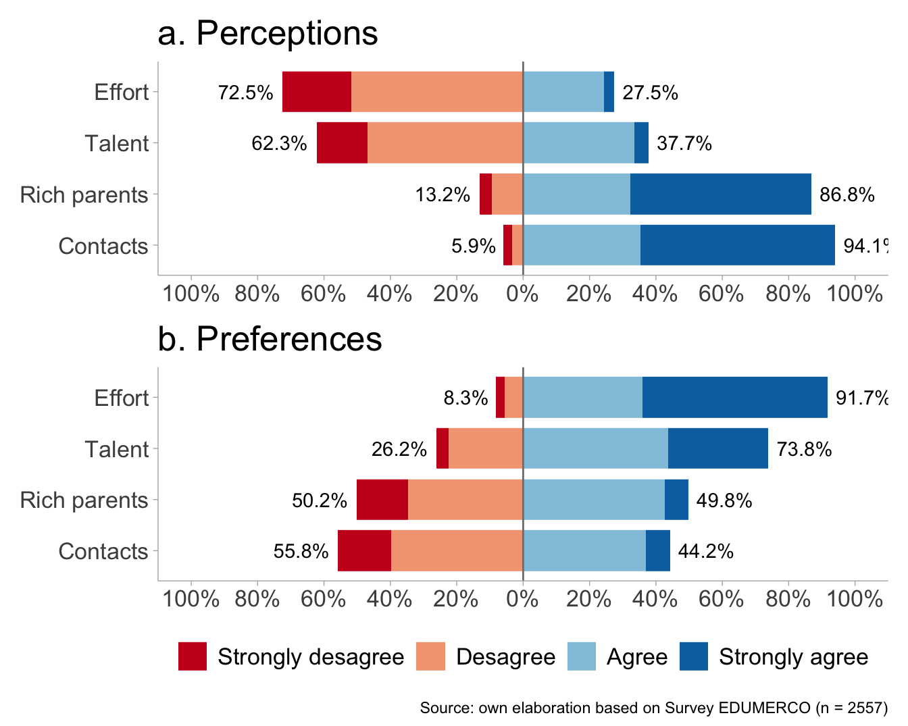
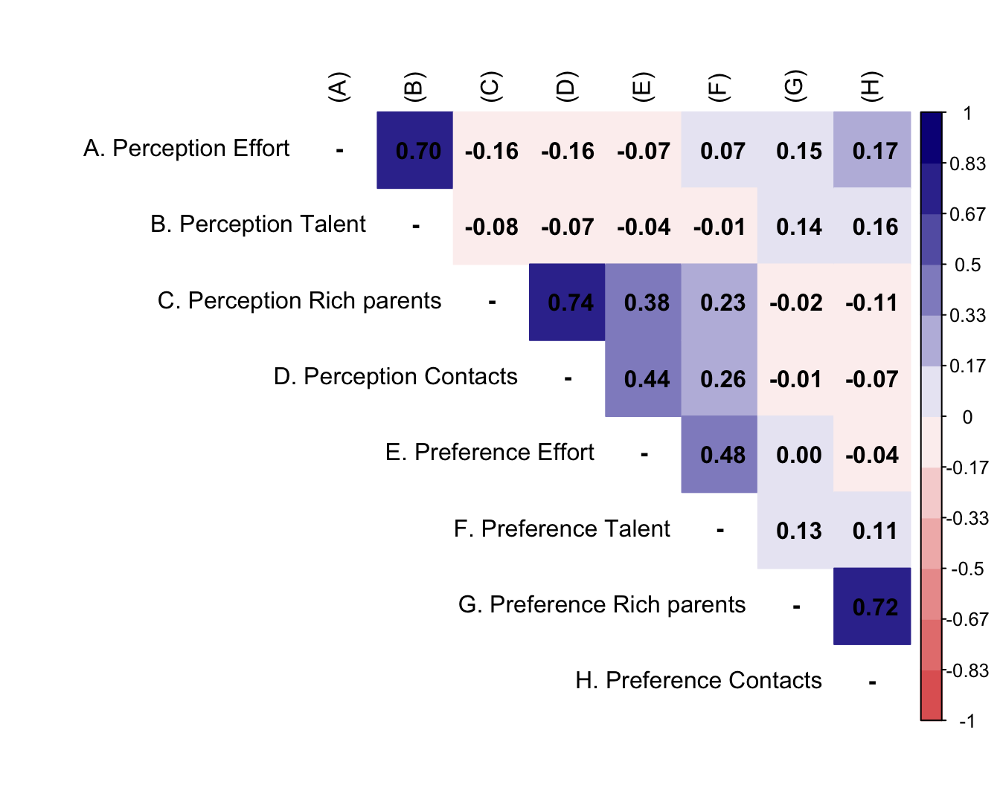
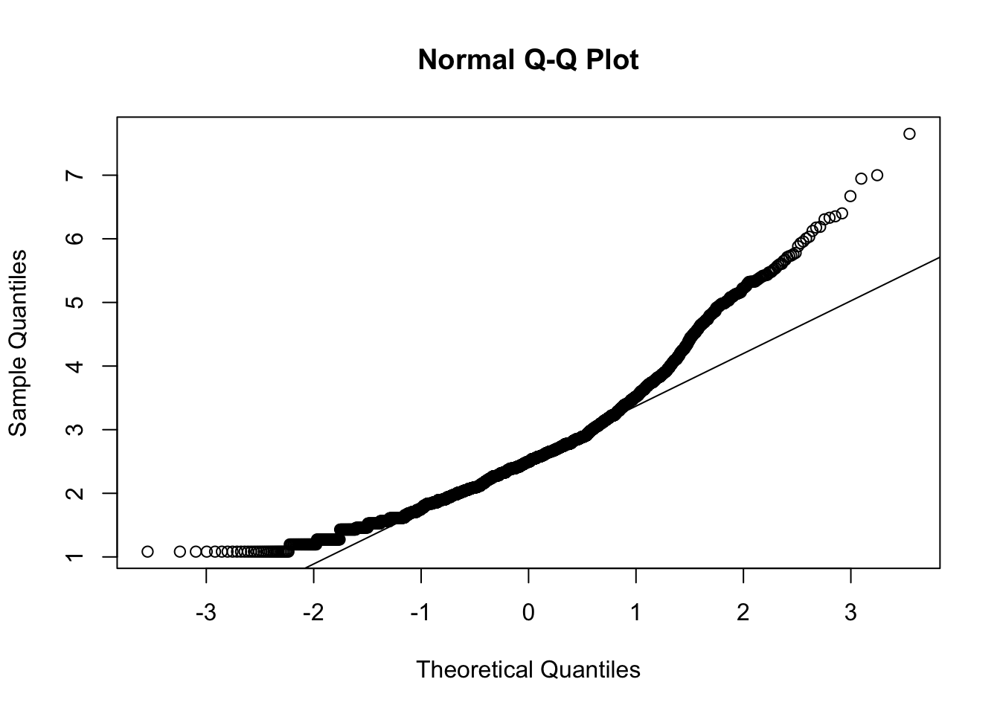

1 Presentation
This is the analysis code for the future paper related to a factorial analysis of the meritocracy scale and their relantionship with market justice preferences in pensions. The dataset used is db_proc.RData generated in the prod_prep.R script.
2 Libraries
3 Data
Show the code
load(here("input/data/proc/db_proc.RData"))
glimpse(db)Rows: 3,470
Columns: 23
$ id <int> 1, 2, 3, 4, 5, 6, 7, 8, 9, 10, 11, 12, 13, 14, 15,…
$ just_pension <fct> Agree, Strongly desagree, Strongly desagree, Stron…
$ perc_effort <fct> Desagree, Strongly desagree, Strongly desagree, De…
$ perc_talent <fct> Desagree, Desagree, Desagree, Desagree, Agree, Des…
$ perc_rich_parents <fct> Agree, Strongly agree, Strongly agree, Strongly ag…
$ perc_contact <fct> Strongly agree, Agree, Strongly agree, Strongly ag…
$ perc_effort_d <fct> Low, Low, Low, Low, High, Low, Low, NA, High, Low,…
$ perc_talent_d <fct> Low, Low, Low, Low, High, Low, Low, NA, High, Low,…
$ perc_rich_parents_d <fct> High, High, High, High, High, High, Low, High, Hig…
$ perc_contact_d <fct> High, High, High, High, High, High, High, High, Hi…
$ pref_effort <fct> Strongly agree, Strongly agree, Strongly agree, St…
$ pref_talent <fct> Strongly agree, Agree, Agree, Desagree, Strongly a…
$ pref_rich_parents <fct> Agree, Strongly agree, Desagree, Strongly agree, A…
$ pref_contact <fct> Desagree, Strongly agree, Desagree, Strongly agree…
$ pref_effort_d <fct> High, High, High, High, High, High, High, NA, High…
$ pref_talent_d <fct> High, High, High, Low, High, High, NA, NA, High, H…
$ pref_rich_parents_d <fct> High, High, Low, High, High, Low, Low, NA, Low, Lo…
$ pref_contact_d <fct> Low, High, Low, High, Low, Low, Low, NA, Low, Low,…
$ age <int> 72, 67, 65, 59, 57, 69, 65, 68, 65, 65, 58, 56, 35…
$ sex <fct> 1, 2, 1, 2, 2, 1, 2, 2, 1, 2, 2, 2, 2, 1, 1, 1, 2,…
$ educ <int> 6, 4, 8, 5, 6, 8, 8, 6, 6, 6, 4, 9, 4, 5, 8, 8, 6,…
$ income <fct> De $890.001 a $1.100.000 mensuales liquidos, De $3…
$ pol <fct> Right, Does not identify, Left, Does not identify,…Show the code
## Analytical sample
db <- db %>%
mutate(
income_4 = case_when(
income %in% c(
"Menos de $280.000 mensuales liquidos",
"De $280.001 a $380.000 mensuales liquidos",
"De $380.001 a $470.000 mensuales liquidos"
) ~ "Bajo",
income %in% c(
"De $470.001 a $610.000 mensuales liquidos",
"De $610.001 a $730.000 mensuales liquidos"
) ~ "Medio-bajo",
income %in% c(
"De $730.001 a $890.000 mensuales liquidos",
"De $890.001 a $1.100.000 mensuales liquidos"
) ~ "Medio-alto",
income %in% c(
"De $1.100.001 a $2.700.000 mensuales liquidos",
"De $2.700.001 a $4.100.000 mensuales liquidos",
"Mas de $4.100.001 mensuales liquidos"
) ~ "Alto",
TRUE ~ NA_character_
),
income_4 = factor(income_4, levels = c("Bajo", "Medio-bajo", "Medio-alto", "Alto"))
)
db$sex <- if_else(db$sex == 1, "Male", "Female")
db$sex <- factor(db$sex, levels = c("Male", "Female"))
db <- db %>%
dplyr::select(-income) %>%
na.omit()4 Analysis
4.1 Descriptives
Show the code
vars_m <- c("perc_effort",
"perc_talent",
"perc_rich_parents",
"perc_contact",
"pref_effort",
"pref_talent",
"pref_rich_parents",
"pref_contact")
t1 <- db %>%
dplyr::select(all_of(vars_m), ends_with("_d"))
df<-dfSummary(t1,
plain.ascii = FALSE,
style = "multiline",
tmp.img.dir = "/tmp",
graph.magnif = 0.75,
headings = F, # encabezado
varnumbers = F, # num variable
labels.col = T, # etiquetas
na.col = T, # missing
graph.col = T, # plot
valid.col = T, # n valido
col.widths = c(20,10,10,10,10,10))
df$Variable <- NULL # delete variable column
print(df, method="render")| Label | Stats / Values | Freqs (% of Valid) | Graph | Valid | Missing | ||||||||||||||||||||
|---|---|---|---|---|---|---|---|---|---|---|---|---|---|---|---|---|---|---|---|---|---|---|---|---|---|
| In Chile people are rewarded for their efforts |
|
|
![](data:image/png;base64,%20iVBORw0KGgoAAAANSUhEUgAAAEcAAABOCAQAAADYtsNcAAAD+mlDQ1BpY2MAADiNjVVdaBxVFD6bubMrJM6D1Kamkg7+NZS0bFLRhNro/mWzbdwsk2y0QZDJ7N2daSYz4/ykaSk+FEEQwajgk+D/W8EnIWqr7YstorRQogSDKPjQ+keh0hcJ67kzs7uTuGu9y9z55pzvfufec+7eC5C4LFuW3iUCLBquLeXT4rPH5sTEOnTBfdANfdAtK46VKpUmARvjwr/a7e8gxt7X9rf3/2frrlBHAYjdhdisOMoi4mUA/hXFsl2ABEH7yAnXYvgJxDtsnCDiEsO1AFcYng/wss+ZkTKIX0UsKKqM/sTbiAfnI/ZaBAdz8NuOPDWorSkiy0XJNquaTiPTvYP7f7ZF3WvE24NPj7MwfRTfA7j2lypyluGHEJ9V5Nx0iK8uabPFEP9luWkJ8SMAXbu8hXIK8T7EY1V7vBzodKmqN9HAK6fUmWcQ34N4dcE8ysbuRPy1MV+cCnV+UpwM5g8eAODiKi2wevcjHrBNaSqIy41XaDbH8oj4uOYWZgJ97i1naTrX0DmlZopBLO6L4/IRVqc+xFepnpdC/V8ttxTGJT2GXpwMdMgwdfz1+nZXnZkI4pI5FwsajCUvVrXxQsh/V7UnpBBftnR/j+LcyE3bk8oBn7+fGuVQkx+T7Vw+xBWYjclAwYR57BUwYBNEkCAPaXxbYKOnChroaKHopWih+NXg7N/CKfn+ALdUav7I6+jRMEKm/yPw0KrC72hVI7wMfnloq3XQCWZwI9QxSS9JkoP4HCKT5DAZIaMgkifJU2SMZNE6Sg41x5Yic2TzudHUeQEjUp83i7yL6HdBxv5nZJjgtM/FSp83ENjP2M9rypXXbl46fW5Xi7tGVp+71nPpdCRnGmotdMja1J1yz//CX+fXsF/nN1oM/gd+A3/r21a3Nes0zFYKfbpvW8RH8z1OZD6lLVVsYbOjolk1VvoCH8sAfbl4uwhnBlv85PfJP5JryfeSHyZ/497kPuHOc59yn3HfgMhd4C5yX3JfcR9zn0dq1HnvNGvur6OxCuZpl1Hcn0Ja2C08KGSFPcLDwmRLT+gVhoQJYS96djerE40XXbsGx7BvZKt9rIAXqXPsbqyz1uE/VEaWBid8puPvMwNObuOEI0k/GSKFbbt6hO31pnZ+Sz3ar4HGc/FsPAVifF98ND4UP8Jwgxnfi75R7PHUcumyyw7ijGmdtLWa6orDyeTjYgqvMioWDOXAoCjruui7HNGmDrWXaOUAsHsyOMJvSf79F9t5pWVznwY4/Cc791q2OQ/grAPQ+2jLNoBn473vAKw+pnj2UngnxGLfAjjVg8PBV08az6sf6/VbeG4l3gDYfL1e//v9en3zA9TfALig/wP/JXgLtNfFGQAAACBjSFJNAAB6JgAAgIQAAPoAAACA6AAAdTAAAOpgAAA6mAAAF3CculE8AAAAAmJLR0QA/4ePzL8AAAAHdElNRQfqAxgPIR+jzcjPAAAAwElEQVRo3u3YQQqDQAxGYUfmjh6i56l36CnbTRdxhNBoSn7lvV0p2A8zYGp7T0rN1QA4v9fthzV4kB4tg2B/tG+/WgKXeWXelm9iw4IDBw4cOErB8Rqe6P94SkdqdttIWV/CWYHysJ41fyvMUE5sgzltT6vYsODAgQMHjlJwvNgGx+6+Dea8I9xxjm2DmedNbFhw4MCBA0cpOF5sg2NX2wbztrtow91ZCt4OOpzq4MCBAweOUnC8lLfB+sSGBcfrAyWoF5Bc1MiMAAAAPXRFWHRpY2M6Y29weXJpZ2h0AENvcHlyaWdodCAyMDA3IEFwcGxlIEluYy4sIGFsbCByaWdodHMgcmVzZXJ2ZWQunmbcKQAAACN0RVh0aWNjOmRlc2NyaXB0aW9uAEdlbmVyaWMgUkdCIFByb2ZpbGUapziOAAAAAElFTkSuQmCC) |
2557 (100.0%) | 0 (0.0%) | ||||||||||||||||||||
| In Chile people are rewarded for their intelligence and ability |
|
|
![](data:image/png;base64,%20iVBORw0KGgoAAAANSUhEUgAAAEEAAABOCAQAAADVqLMbAAAD+mlDQ1BpY2MAADiNjVVdaBxVFD6bubMrJM6D1Kamkg7+NZS0bFLRhNro/mWzbdwsk2y0QZDJ7N2daSYz4/ykaSk+FEEQwajgk+D/W8EnIWqr7YstorRQogSDKPjQ+keh0hcJ67kzs7uTuGu9y9z55pzvfufec+7eC5C4LFuW3iUCLBquLeXT4rPH5sTEOnTBfdANfdAtK46VKpUmARvjwr/a7e8gxt7X9rf3/2frrlBHAYjdhdisOMoi4mUA/hXFsl2ABEH7yAnXYvgJxDtsnCDiEsO1AFcYng/wss+ZkTKIX0UsKKqM/sTbiAfnI/ZaBAdz8NuOPDWorSkiy0XJNquaTiPTvYP7f7ZF3WvE24NPj7MwfRTfA7j2lypyluGHEJ9V5Nx0iK8uabPFEP9luWkJ8SMAXbu8hXIK8T7EY1V7vBzodKmqN9HAK6fUmWcQ34N4dcE8ysbuRPy1MV+cCnV+UpwM5g8eAODiKi2wevcjHrBNaSqIy41XaDbH8oj4uOYWZgJ97i1naTrX0DmlZopBLO6L4/IRVqc+xFepnpdC/V8ttxTGJT2GXpwMdMgwdfz1+nZXnZkI4pI5FwsajCUvVrXxQsh/V7UnpBBftnR/j+LcyE3bk8oBn7+fGuVQkx+T7Vw+xBWYjclAwYR57BUwYBNEkCAPaXxbYKOnChroaKHopWih+NXg7N/CKfn+ALdUav7I6+jRMEKm/yPw0KrC72hVI7wMfnloq3XQCWZwI9QxSS9JkoP4HCKT5DAZIaMgkifJU2SMZNE6Sg41x5Yic2TzudHUeQEjUp83i7yL6HdBxv5nZJjgtM/FSp83ENjP2M9rypXXbl46fW5Xi7tGVp+71nPpdCRnGmotdMja1J1yz//CX+fXsF/nN1oM/gd+A3/r21a3Nes0zFYKfbpvW8RH8z1OZD6lLVVsYbOjolk1VvoCH8sAfbl4uwhnBlv85PfJP5JryfeSHyZ/497kPuHOc59yn3HfgMhd4C5yX3JfcR9zn0dq1HnvNGvur6OxCuZpl1Hcn0Ja2C08KGSFPcLDwmRLT+gVhoQJYS96djerE40XXbsGx7BvZKt9rIAXqXPsbqyz1uE/VEaWBid8puPvMwNObuOEI0k/GSKFbbt6hO31pnZ+Sz3ar4HGc/FsPAVifF98ND4UP8Jwgxnfi75R7PHUcumyyw7ijGmdtLWa6orDyeTjYgqvMioWDOXAoCjruui7HNGmDrWXaOUAsHsyOMJvSf79F9t5pWVznwY4/Cc791q2OQ/grAPQ+2jLNoBn473vAKw+pnj2UngnxGLfAjjVg8PBV08az6sf6/VbeG4l3gDYfL1e//v9en3zA9TfALig/wP/JXgLtNfFGQAAACBjSFJNAAB6JgAAgIQAAPoAAACA6AAAdTAAAOpgAAA6mAAAF3CculE8AAAAAmJLR0QA/4ePzL8AAAAHdElNRQfqAxgPIR+jzcjPAAAAvUlEQVRo3u3ZQQqDMBSE4Yl4xx6i59E7eMp20UWfQjCBFzOLf3Yikg9fIIOWj2ZnmQ2A8MsaL/aGjfEuGcvGhdbzrdfNo8eAt2AwCAgQIECAAKGWy0k54iS8S4knd0oVaEpc1W0Q23N1OrzwztaUk/OOMxgEBAgQIECAUAutSfIbRGZrav8mNag19ewpg0FAgAABAgQItdCaJL9BxNaU8yeum/BvTU/uCYNBQIAAAQIECLW4taY5MRgEBEn6AtTyF+S8qrzZAAAAPXRFWHRpY2M6Y29weXJpZ2h0AENvcHlyaWdodCAyMDA3IEFwcGxlIEluYy4sIGFsbCByaWdodHMgcmVzZXJ2ZWQunmbcKQAAACN0RVh0aWNjOmRlc2NyaXB0aW9uAEdlbmVyaWMgUkdCIFByb2ZpbGUapziOAAAAAElFTkSuQmCC) |
2557 (100.0%) | 0 (0.0%) | ||||||||||||||||||||
| In Chile those with wealthy parents do much better in life |
|
|
![](data:image/png;base64,%20iVBORw0KGgoAAAANSUhEUgAAAEoAAABOCAQAAAAtSEjsAAAD+mlDQ1BpY2MAADiNjVVdaBxVFD6bubMrJM6D1Kamkg7+NZS0bFLRhNro/mWzbdwsk2y0QZDJ7N2daSYz4/ykaSk+FEEQwajgk+D/W8EnIWqr7YstorRQogSDKPjQ+keh0hcJ67kzs7uTuGu9y9z55pzvfufec+7eC5C4LFuW3iUCLBquLeXT4rPH5sTEOnTBfdANfdAtK46VKpUmARvjwr/a7e8gxt7X9rf3/2frrlBHAYjdhdisOMoi4mUA/hXFsl2ABEH7yAnXYvgJxDtsnCDiEsO1AFcYng/wss+ZkTKIX0UsKKqM/sTbiAfnI/ZaBAdz8NuOPDWorSkiy0XJNquaTiPTvYP7f7ZF3WvE24NPj7MwfRTfA7j2lypyluGHEJ9V5Nx0iK8uabPFEP9luWkJ8SMAXbu8hXIK8T7EY1V7vBzodKmqN9HAK6fUmWcQ34N4dcE8ysbuRPy1MV+cCnV+UpwM5g8eAODiKi2wevcjHrBNaSqIy41XaDbH8oj4uOYWZgJ97i1naTrX0DmlZopBLO6L4/IRVqc+xFepnpdC/V8ttxTGJT2GXpwMdMgwdfz1+nZXnZkI4pI5FwsajCUvVrXxQsh/V7UnpBBftnR/j+LcyE3bk8oBn7+fGuVQkx+T7Vw+xBWYjclAwYR57BUwYBNEkCAPaXxbYKOnChroaKHopWih+NXg7N/CKfn+ALdUav7I6+jRMEKm/yPw0KrC72hVI7wMfnloq3XQCWZwI9QxSS9JkoP4HCKT5DAZIaMgkifJU2SMZNE6Sg41x5Yic2TzudHUeQEjUp83i7yL6HdBxv5nZJjgtM/FSp83ENjP2M9rypXXbl46fW5Xi7tGVp+71nPpdCRnGmotdMja1J1yz//CX+fXsF/nN1oM/gd+A3/r21a3Nes0zFYKfbpvW8RH8z1OZD6lLVVsYbOjolk1VvoCH8sAfbl4uwhnBlv85PfJP5JryfeSHyZ/497kPuHOc59yn3HfgMhd4C5yX3JfcR9zn0dq1HnvNGvur6OxCuZpl1Hcn0Ja2C08KGSFPcLDwmRLT+gVhoQJYS96djerE40XXbsGx7BvZKt9rIAXqXPsbqyz1uE/VEaWBid8puPvMwNObuOEI0k/GSKFbbt6hO31pnZ+Sz3ar4HGc/FsPAVifF98ND4UP8Jwgxnfi75R7PHUcumyyw7ijGmdtLWa6orDyeTjYgqvMioWDOXAoCjruui7HNGmDrWXaOUAsHsyOMJvSf79F9t5pWVznwY4/Cc791q2OQ/grAPQ+2jLNoBn473vAKw+pnj2UngnxGLfAjjVg8PBV08az6sf6/VbeG4l3gDYfL1e//v9en3zA9TfALig/wP/JXgLtNfFGQAAACBjSFJNAAB6JgAAgIQAAPoAAACA6AAAdTAAAOpgAAA6mAAAF3CculE8AAAAAmJLR0QA/4ePzL8AAAAHdElNRQfqAxgPIR+jzcjPAAAAvElEQVRo3u3XSwqEMBCE4c7gHT2E5xnv4Cl1MTC0Ij4STAr7r524+aB6UUmz6eXTGgCqJJ3/GP8HNqTaEH/b3fpXb2ZmU23RJpL1gQIFChQoUNFQm5XQeh/8kvyOqT6iXLxDv77v7tOm/grdXZ4+La5Msj5QoECBAgUqGorleZQ3LM+clK3V0+WZk9LLlKwPFChQoECBioZieR4l6vLMiKvpkeV5P+tblqwPFChQoECBiobSX54qkawP1NUsv+IX5KzlohkAAAA9dEVYdGljYzpjb3B5cmlnaHQAQ29weXJpZ2h0IDIwMDcgQXBwbGUgSW5jLiwgYWxsIHJpZ2h0cyByZXNlcnZlZC6eZtwpAAAAI3RFWHRpY2M6ZGVzY3JpcHRpb24AR2VuZXJpYyBSR0IgUHJvZmlsZRqnOI4AAAAASUVORK5CYII=) |
2557 (100.0%) | 0 (0.0%) | ||||||||||||||||||||
| In Chile those with good contacts do much better in life |
|
|
![](data:image/png;base64,%20iVBORw0KGgoAAAANSUhEUgAAAE8AAABOCAQAAADLYYOoAAAD+mlDQ1BpY2MAADiNjVVdaBxVFD6bubMrJM6D1Kamkg7+NZS0bFLRhNro/mWzbdwsk2y0QZDJ7N2daSYz4/ykaSk+FEEQwajgk+D/W8EnIWqr7YstorRQogSDKPjQ+keh0hcJ67kzs7uTuGu9y9z55pzvfufec+7eC5C4LFuW3iUCLBquLeXT4rPH5sTEOnTBfdANfdAtK46VKpUmARvjwr/a7e8gxt7X9rf3/2frrlBHAYjdhdisOMoi4mUA/hXFsl2ABEH7yAnXYvgJxDtsnCDiEsO1AFcYng/wss+ZkTKIX0UsKKqM/sTbiAfnI/ZaBAdz8NuOPDWorSkiy0XJNquaTiPTvYP7f7ZF3WvE24NPj7MwfRTfA7j2lypyluGHEJ9V5Nx0iK8uabPFEP9luWkJ8SMAXbu8hXIK8T7EY1V7vBzodKmqN9HAK6fUmWcQ34N4dcE8ysbuRPy1MV+cCnV+UpwM5g8eAODiKi2wevcjHrBNaSqIy41XaDbH8oj4uOYWZgJ97i1naTrX0DmlZopBLO6L4/IRVqc+xFepnpdC/V8ttxTGJT2GXpwMdMgwdfz1+nZXnZkI4pI5FwsajCUvVrXxQsh/V7UnpBBftnR/j+LcyE3bk8oBn7+fGuVQkx+T7Vw+xBWYjclAwYR57BUwYBNEkCAPaXxbYKOnChroaKHopWih+NXg7N/CKfn+ALdUav7I6+jRMEKm/yPw0KrC72hVI7wMfnloq3XQCWZwI9QxSS9JkoP4HCKT5DAZIaMgkifJU2SMZNE6Sg41x5Yic2TzudHUeQEjUp83i7yL6HdBxv5nZJjgtM/FSp83ENjP2M9rypXXbl46fW5Xi7tGVp+71nPpdCRnGmotdMja1J1yz//CX+fXsF/nN1oM/gd+A3/r21a3Nes0zFYKfbpvW8RH8z1OZD6lLVVsYbOjolk1VvoCH8sAfbl4uwhnBlv85PfJP5JryfeSHyZ/497kPuHOc59yn3HfgMhd4C5yX3JfcR9zn0dq1HnvNGvur6OxCuZpl1Hcn0Ja2C08KGSFPcLDwmRLT+gVhoQJYS96djerE40XXbsGx7BvZKt9rIAXqXPsbqyz1uE/VEaWBid8puPvMwNObuOEI0k/GSKFbbt6hO31pnZ+Sz3ar4HGc/FsPAVifF98ND4UP8Jwgxnfi75R7PHUcumyyw7ijGmdtLWa6orDyeTjYgqvMioWDOXAoCjruui7HNGmDrWXaOUAsHsyOMJvSf79F9t5pWVznwY4/Cc791q2OQ/grAPQ+2jLNoBn473vAKw+pnj2UngnxGLfAjjVg8PBV08az6sf6/VbeG4l3gDYfL1e//v9en3zA9TfALig/wP/JXgLtNfFGQAAACBjSFJNAAB6JgAAgIQAAPoAAACA6AAAdTAAAOpgAAA6mAAAF3CculE8AAAAAmJLR0QA/4ePzL8AAAAHdElNRQfqAxgPIR+jzcjPAAAAv0lEQVRo3u3WywmFMBRF0UTsMUVYj/ZglToRSfxBTOQew94zZ4t38+D4xSnXWQPgfVcff0zbQxy8JSn+Nxx+veCCpeyU+HHhwYMHD55U8Brm9ennbO055ON1ZTrz9h72nlrJcccdbruXb3hu28o6L1D8uPDgwYMHTyp4DfNYy7n9fy3XqXxzX67lOtV4x+LHhQcPHjx4UsFrmMdazo21XFR0xA/X8rvS1y9+XHjw4MGDJxW8hnl/Wst6iR8XXkkrHksXkK8TiqQAAAA9dEVYdGljYzpjb3B5cmlnaHQAQ29weXJpZ2h0IDIwMDcgQXBwbGUgSW5jLiwgYWxsIHJpZ2h0cyByZXNlcnZlZC6eZtwpAAAAI3RFWHRpY2M6ZGVzY3JpcHRpb24AR2VuZXJpYyBSR0IgUHJvZmlsZRqnOI4AAAAASUVORK5CYII=) |
2557 (100.0%) | 0 (0.0%) | ||||||||||||||||||||
| Those who work harder should reap greater rewards than those who work less hard |
|
|
![](data:image/png;base64,%20iVBORw0KGgoAAAANSUhEUgAAAEsAAABOCAQAAADCiiPSAAAD+mlDQ1BpY2MAADiNjVVdaBxVFD6bubMrJM6D1Kamkg7+NZS0bFLRhNro/mWzbdwsk2y0QZDJ7N2daSYz4/ykaSk+FEEQwajgk+D/W8EnIWqr7YstorRQogSDKPjQ+keh0hcJ67kzs7uTuGu9y9z55pzvfufec+7eC5C4LFuW3iUCLBquLeXT4rPH5sTEOnTBfdANfdAtK46VKpUmARvjwr/a7e8gxt7X9rf3/2frrlBHAYjdhdisOMoi4mUA/hXFsl2ABEH7yAnXYvgJxDtsnCDiEsO1AFcYng/wss+ZkTKIX0UsKKqM/sTbiAfnI/ZaBAdz8NuOPDWorSkiy0XJNquaTiPTvYP7f7ZF3WvE24NPj7MwfRTfA7j2lypyluGHEJ9V5Nx0iK8uabPFEP9luWkJ8SMAXbu8hXIK8T7EY1V7vBzodKmqN9HAK6fUmWcQ34N4dcE8ysbuRPy1MV+cCnV+UpwM5g8eAODiKi2wevcjHrBNaSqIy41XaDbH8oj4uOYWZgJ97i1naTrX0DmlZopBLO6L4/IRVqc+xFepnpdC/V8ttxTGJT2GXpwMdMgwdfz1+nZXnZkI4pI5FwsajCUvVrXxQsh/V7UnpBBftnR/j+LcyE3bk8oBn7+fGuVQkx+T7Vw+xBWYjclAwYR57BUwYBNEkCAPaXxbYKOnChroaKHopWih+NXg7N/CKfn+ALdUav7I6+jRMEKm/yPw0KrC72hVI7wMfnloq3XQCWZwI9QxSS9JkoP4HCKT5DAZIaMgkifJU2SMZNE6Sg41x5Yic2TzudHUeQEjUp83i7yL6HdBxv5nZJjgtM/FSp83ENjP2M9rypXXbl46fW5Xi7tGVp+71nPpdCRnGmotdMja1J1yz//CX+fXsF/nN1oM/gd+A3/r21a3Nes0zFYKfbpvW8RH8z1OZD6lLVVsYbOjolk1VvoCH8sAfbl4uwhnBlv85PfJP5JryfeSHyZ/497kPuHOc59yn3HfgMhd4C5yX3JfcR9zn0dq1HnvNGvur6OxCuZpl1Hcn0Ja2C08KGSFPcLDwmRLT+gVhoQJYS96djerE40XXbsGx7BvZKt9rIAXqXPsbqyz1uE/VEaWBid8puPvMwNObuOEI0k/GSKFbbt6hO31pnZ+Sz3ar4HGc/FsPAVifF98ND4UP8Jwgxnfi75R7PHUcumyyw7ijGmdtLWa6orDyeTjYgqvMioWDOXAoCjruui7HNGmDrWXaOUAsHsyOMJvSf79F9t5pWVznwY4/Cc791q2OQ/grAPQ+2jLNoBn473vAKw+pnj2UngnxGLfAjjVg8PBV08az6sf6/VbeG4l3gDYfL1e//v9en3zA9TfALig/wP/JXgLtNfFGQAAACBjSFJNAAB6JgAAgIQAAPoAAACA6AAAdTAAAOpgAAA6mAAAF3CculE8AAAAAmJLR0QA/4ePzL8AAAAHdElNRQfqAxgPIR+jzcjPAAAAvElEQVRo3u3Xyw2EMBAEURuRo4MgHsiBKOGC0JivbEDTSFU3bk87PvTGKSjWeANgPa+1H8Py0LroQbGvfPNrpZA8RLtEjwgLFiyFYMGCpVCbf47enqVoV47LzFq72FsqZUfss79BPhv1gBXMNvV9ZaJHhAULlkKwYMFSiHV617/X6RvVLtzTdfpG9S9V9IiwYMFSCBYsWAqxTu9inRZljvXpOi0pf9WiR4QFC5ZCsGDBUugP61Qn0SPCKmkG4+4XkEEfl5cAAAA9dEVYdGljYzpjb3B5cmlnaHQAQ29weXJpZ2h0IDIwMDcgQXBwbGUgSW5jLiwgYWxsIHJpZ2h0cyByZXNlcnZlZC6eZtwpAAAAI3RFWHRpY2M6ZGVzY3JpcHRpb24AR2VuZXJpYyBSR0IgUHJvZmlsZRqnOI4AAAAASUVORK5CYII=) |
2557 (100.0%) | 0 (0.0%) | ||||||||||||||||||||
| Those with more talent should reap greater rewards than those with less talent |
|
|
![](data:image/png;base64,%20iVBORw0KGgoAAAANSUhEUgAAAD4AAABOCAQAAADS6m0OAAAD+mlDQ1BpY2MAADiNjVVdaBxVFD6bubMrJM6D1Kamkg7+NZS0bFLRhNro/mWzbdwsk2y0QZDJ7N2daSYz4/ykaSk+FEEQwajgk+D/W8EnIWqr7YstorRQogSDKPjQ+keh0hcJ67kzs7uTuGu9y9z55pzvfufec+7eC5C4LFuW3iUCLBquLeXT4rPH5sTEOnTBfdANfdAtK46VKpUmARvjwr/a7e8gxt7X9rf3/2frrlBHAYjdhdisOMoi4mUA/hXFsl2ABEH7yAnXYvgJxDtsnCDiEsO1AFcYng/wss+ZkTKIX0UsKKqM/sTbiAfnI/ZaBAdz8NuOPDWorSkiy0XJNquaTiPTvYP7f7ZF3WvE24NPj7MwfRTfA7j2lypyluGHEJ9V5Nx0iK8uabPFEP9luWkJ8SMAXbu8hXIK8T7EY1V7vBzodKmqN9HAK6fUmWcQ34N4dcE8ysbuRPy1MV+cCnV+UpwM5g8eAODiKi2wevcjHrBNaSqIy41XaDbH8oj4uOYWZgJ97i1naTrX0DmlZopBLO6L4/IRVqc+xFepnpdC/V8ttxTGJT2GXpwMdMgwdfz1+nZXnZkI4pI5FwsajCUvVrXxQsh/V7UnpBBftnR/j+LcyE3bk8oBn7+fGuVQkx+T7Vw+xBWYjclAwYR57BUwYBNEkCAPaXxbYKOnChroaKHopWih+NXg7N/CKfn+ALdUav7I6+jRMEKm/yPw0KrC72hVI7wMfnloq3XQCWZwI9QxSS9JkoP4HCKT5DAZIaMgkifJU2SMZNE6Sg41x5Yic2TzudHUeQEjUp83i7yL6HdBxv5nZJjgtM/FSp83ENjP2M9rypXXbl46fW5Xi7tGVp+71nPpdCRnGmotdMja1J1yz//CX+fXsF/nN1oM/gd+A3/r21a3Nes0zFYKfbpvW8RH8z1OZD6lLVVsYbOjolk1VvoCH8sAfbl4uwhnBlv85PfJP5JryfeSHyZ/497kPuHOc59yn3HfgMhd4C5yX3JfcR9zn0dq1HnvNGvur6OxCuZpl1Hcn0Ja2C08KGSFPcLDwmRLT+gVhoQJYS96djerE40XXbsGx7BvZKt9rIAXqXPsbqyz1uE/VEaWBid8puPvMwNObuOEI0k/GSKFbbt6hO31pnZ+Sz3ar4HGc/FsPAVifF98ND4UP8Jwgxnfi75R7PHUcumyyw7ijGmdtLWa6orDyeTjYgqvMioWDOXAoCjruui7HNGmDrWXaOUAsHsyOMJvSf79F9t5pWVznwY4/Cc791q2OQ/grAPQ+2jLNoBn473vAKw+pnj2UngnxGLfAjjVg8PBV08az6sf6/VbeG4l3gDYfL1e//v9en3zA9TfALig/wP/JXgLtNfFGQAAACBjSFJNAAB6JgAAgIQAAPoAAACA6AAAdTAAAOpgAAA6mAAAF3CculE8AAAAAmJLR0QA/4ePzL8AAAAHdElNRQfqAxgPIR+jzcjPAAAAr0lEQVRo3u2YQQqAMAwEU+kffYTv0T/4Sj0IEsVDa00jZOYmHgbbDVlMm/gxOLoDy7N+WM4ATMlKqDOWr69GERFZO3153DtHjhw5cuQm3LZar312kPR+NVviCu37z7HPL6psS+d5bDLltGUk7qghR44cOXITaDIuNDeZatTxNjaZWq6ZijtqyJEjR47cBJqMCwZNpvwvzedNpiY1cUcNOXLkyJGb8J8m05u4d+4q3wEcqBfkSTqFowAAAD10RVh0aWNjOmNvcHlyaWdodABDb3B5cmlnaHQgMjAwNyBBcHBsZSBJbmMuLCBhbGwgcmlnaHRzIHJlc2VydmVkLp5m3CkAAAAjdEVYdGljYzpkZXNjcmlwdGlvbgBHZW5lcmljIFJHQiBQcm9maWxlGqc4jgAAAABJRU5ErkJggg==) |
2557 (100.0%) | 0 (0.0%) | ||||||||||||||||||||
| It is good that those who have rich parents do better in life |
|
|
![](data:image/png;base64,%20iVBORw0KGgoAAAANSUhEUgAAADwAAABOCAQAAADWH70zAAAD+mlDQ1BpY2MAADiNjVVdaBxVFD6bubMrJM6D1Kamkg7+NZS0bFLRhNro/mWzbdwsk2y0QZDJ7N2daSYz4/ykaSk+FEEQwajgk+D/W8EnIWqr7YstorRQogSDKPjQ+keh0hcJ67kzs7uTuGu9y9z55pzvfufec+7eC5C4LFuW3iUCLBquLeXT4rPH5sTEOnTBfdANfdAtK46VKpUmARvjwr/a7e8gxt7X9rf3/2frrlBHAYjdhdisOMoi4mUA/hXFsl2ABEH7yAnXYvgJxDtsnCDiEsO1AFcYng/wss+ZkTKIX0UsKKqM/sTbiAfnI/ZaBAdz8NuOPDWorSkiy0XJNquaTiPTvYP7f7ZF3WvE24NPj7MwfRTfA7j2lypyluGHEJ9V5Nx0iK8uabPFEP9luWkJ8SMAXbu8hXIK8T7EY1V7vBzodKmqN9HAK6fUmWcQ34N4dcE8ysbuRPy1MV+cCnV+UpwM5g8eAODiKi2wevcjHrBNaSqIy41XaDbH8oj4uOYWZgJ97i1naTrX0DmlZopBLO6L4/IRVqc+xFepnpdC/V8ttxTGJT2GXpwMdMgwdfz1+nZXnZkI4pI5FwsajCUvVrXxQsh/V7UnpBBftnR/j+LcyE3bk8oBn7+fGuVQkx+T7Vw+xBWYjclAwYR57BUwYBNEkCAPaXxbYKOnChroaKHopWih+NXg7N/CKfn+ALdUav7I6+jRMEKm/yPw0KrC72hVI7wMfnloq3XQCWZwI9QxSS9JkoP4HCKT5DAZIaMgkifJU2SMZNE6Sg41x5Yic2TzudHUeQEjUp83i7yL6HdBxv5nZJjgtM/FSp83ENjP2M9rypXXbl46fW5Xi7tGVp+71nPpdCRnGmotdMja1J1yz//CX+fXsF/nN1oM/gd+A3/r21a3Nes0zFYKfbpvW8RH8z1OZD6lLVVsYbOjolk1VvoCH8sAfbl4uwhnBlv85PfJP5JryfeSHyZ/497kPuHOc59yn3HfgMhd4C5yX3JfcR9zn0dq1HnvNGvur6OxCuZpl1Hcn0Ja2C08KGSFPcLDwmRLT+gVhoQJYS96djerE40XXbsGx7BvZKt9rIAXqXPsbqyz1uE/VEaWBid8puPvMwNObuOEI0k/GSKFbbt6hO31pnZ+Sz3ar4HGc/FsPAVifF98ND4UP8Jwgxnfi75R7PHUcumyyw7ijGmdtLWa6orDyeTjYgqvMioWDOXAoCjruui7HNGmDrWXaOUAsHsyOMJvSf79F9t5pWVznwY4/Cc791q2OQ/grAPQ+2jLNoBn473vAKw+pnj2UngnxGLfAjjVg8PBV08az6sf6/VbeG4l3gDYfL1e//v9en3zA9TfALig/wP/JXgLtNfFGQAAACBjSFJNAAB6JgAAgIQAAPoAAACA6AAAdTAAAOpgAAA6mAAAF3CculE8AAAAAmJLR0QA/4ePzL8AAAAHdElNRQfqAxgPIR+jzcjPAAAArklEQVRo3u2Z3QmAMAwGrXRHh3Ae3cEp9TVWaFP7C7l7K6KHTUM+qLuXMayDvAbFXi5ORcF3918mP+/fj7bEq1e1P7ZXY8SIESNGrCaYTvWmTwonZ2TBqFUhXXNs9VE5csbSSmYCySF+Xuy1E2LEiBEjVkMC6UbTBPJBbGnDBBLyPj/22gkxYsSIEashgXQjkUBK7lwyxGECaVlxe+2EGDFixIjVzJFAemKvxsPED77PF+QB6ogfAAAAPXRFWHRpY2M6Y29weXJpZ2h0AENvcHlyaWdodCAyMDA3IEFwcGxlIEluYy4sIGFsbCByaWdodHMgcmVzZXJ2ZWQunmbcKQAAACN0RVh0aWNjOmRlc2NyaXB0aW9uAEdlbmVyaWMgUkdCIFByb2ZpbGUapziOAAAAAElFTkSuQmCC) |
2557 (100.0%) | 0 (0.0%) | ||||||||||||||||||||
| It is good that those who have good contacts do better in life |
|
|
![](data:image/png;base64,%20iVBORw0KGgoAAAANSUhEUgAAADkAAABOCAQAAAAwNnZ3AAAD+mlDQ1BpY2MAADiNjVVdaBxVFD6bubMrJM6D1Kamkg7+NZS0bFLRhNro/mWzbdwsk2y0QZDJ7N2daSYz4/ykaSk+FEEQwajgk+D/W8EnIWqr7YstorRQogSDKPjQ+keh0hcJ67kzs7uTuGu9y9z55pzvfufec+7eC5C4LFuW3iUCLBquLeXT4rPH5sTEOnTBfdANfdAtK46VKpUmARvjwr/a7e8gxt7X9rf3/2frrlBHAYjdhdisOMoi4mUA/hXFsl2ABEH7yAnXYvgJxDtsnCDiEsO1AFcYng/wss+ZkTKIX0UsKKqM/sTbiAfnI/ZaBAdz8NuOPDWorSkiy0XJNquaTiPTvYP7f7ZF3WvE24NPj7MwfRTfA7j2lypyluGHEJ9V5Nx0iK8uabPFEP9luWkJ8SMAXbu8hXIK8T7EY1V7vBzodKmqN9HAK6fUmWcQ34N4dcE8ysbuRPy1MV+cCnV+UpwM5g8eAODiKi2wevcjHrBNaSqIy41XaDbH8oj4uOYWZgJ97i1naTrX0DmlZopBLO6L4/IRVqc+xFepnpdC/V8ttxTGJT2GXpwMdMgwdfz1+nZXnZkI4pI5FwsajCUvVrXxQsh/V7UnpBBftnR/j+LcyE3bk8oBn7+fGuVQkx+T7Vw+xBWYjclAwYR57BUwYBNEkCAPaXxbYKOnChroaKHopWih+NXg7N/CKfn+ALdUav7I6+jRMEKm/yPw0KrC72hVI7wMfnloq3XQCWZwI9QxSS9JkoP4HCKT5DAZIaMgkifJU2SMZNE6Sg41x5Yic2TzudHUeQEjUp83i7yL6HdBxv5nZJjgtM/FSp83ENjP2M9rypXXbl46fW5Xi7tGVp+71nPpdCRnGmotdMja1J1yz//CX+fXsF/nN1oM/gd+A3/r21a3Nes0zFYKfbpvW8RH8z1OZD6lLVVsYbOjolk1VvoCH8sAfbl4uwhnBlv85PfJP5JryfeSHyZ/497kPuHOc59yn3HfgMhd4C5yX3JfcR9zn0dq1HnvNGvur6OxCuZpl1Hcn0Ja2C08KGSFPcLDwmRLT+gVhoQJYS96djerE40XXbsGx7BvZKt9rIAXqXPsbqyz1uE/VEaWBid8puPvMwNObuOEI0k/GSKFbbt6hO31pnZ+Sz3ar4HGc/FsPAVifF98ND4UP8Jwgxnfi75R7PHUcumyyw7ijGmdtLWa6orDyeTjYgqvMioWDOXAoCjruui7HNGmDrWXaOUAsHsyOMJvSf79F9t5pWVznwY4/Cc791q2OQ/grAPQ+2jLNoBn473vAKw+pnj2UngnxGLfAjjVg8PBV08az6sf6/VbeG4l3gDYfL1e//v9en3zA9TfALig/wP/JXgLtNfFGQAAACBjSFJNAAB6JgAAgIQAAPoAAACA6AAAdTAAAOpgAAA6mAAAF3CculE8AAAAAmJLR0QA/4ePzL8AAAAHdElNRQfqAxgPIR+jzcjPAAAAqklEQVRo3u3ZWw5AMBCFYZXu0SKshz1YJa9TJL1l2ofzz5sIX3Q0c0K4l9G1DhdFyGgPzqLG7qGesTeO6akte/HV/ZQavYSEhISUIV+TpH9O5CvYSdYwCAvLKrMX9vCLe2YBq1NBS6VviMYmgYSEhJQhSQVO5Z4Kvl8WnFPB37uhsUkgISEhZUhSgVNlUkHL34Iq8p0KfDqrsUkgISEhZcjZqWBMafRyAvkAzXMX5JahC+8AAAA9dEVYdGljYzpjb3B5cmlnaHQAQ29weXJpZ2h0IDIwMDcgQXBwbGUgSW5jLiwgYWxsIHJpZ2h0cyByZXNlcnZlZC6eZtwpAAAAI3RFWHRpY2M6ZGVzY3JpcHRpb24AR2VuZXJpYyBSR0IgUHJvZmlsZRqnOI4AAAAASUVORK5CYII=) |
2557 (100.0%) | 0 (0.0%) | ||||||||||||||||||||
| In Chile people are rewarded for their efforts |
|
|
![](data:image/png;base64,%20iVBORw0KGgoAAAANSUhEUgAAAF4AAAAqCAQAAACQaCQyAAAD+mlDQ1BpY2MAADiNjVVdaBxVFD6bubMrJM6D1Kamkg7+NZS0bFLRhNro/mWzbdwsk2y0QZDJ7N2daSYz4/ykaSk+FEEQwajgk+D/W8EnIWqr7YstorRQogSDKPjQ+keh0hcJ67kzs7uTuGu9y9z55pzvfufec+7eC5C4LFuW3iUCLBquLeXT4rPH5sTEOnTBfdANfdAtK46VKpUmARvjwr/a7e8gxt7X9rf3/2frrlBHAYjdhdisOMoi4mUA/hXFsl2ABEH7yAnXYvgJxDtsnCDiEsO1AFcYng/wss+ZkTKIX0UsKKqM/sTbiAfnI/ZaBAdz8NuOPDWorSkiy0XJNquaTiPTvYP7f7ZF3WvE24NPj7MwfRTfA7j2lypyluGHEJ9V5Nx0iK8uabPFEP9luWkJ8SMAXbu8hXIK8T7EY1V7vBzodKmqN9HAK6fUmWcQ34N4dcE8ysbuRPy1MV+cCnV+UpwM5g8eAODiKi2wevcjHrBNaSqIy41XaDbH8oj4uOYWZgJ97i1naTrX0DmlZopBLO6L4/IRVqc+xFepnpdC/V8ttxTGJT2GXpwMdMgwdfz1+nZXnZkI4pI5FwsajCUvVrXxQsh/V7UnpBBftnR/j+LcyE3bk8oBn7+fGuVQkx+T7Vw+xBWYjclAwYR57BUwYBNEkCAPaXxbYKOnChroaKHopWih+NXg7N/CKfn+ALdUav7I6+jRMEKm/yPw0KrC72hVI7wMfnloq3XQCWZwI9QxSS9JkoP4HCKT5DAZIaMgkifJU2SMZNE6Sg41x5Yic2TzudHUeQEjUp83i7yL6HdBxv5nZJjgtM/FSp83ENjP2M9rypXXbl46fW5Xi7tGVp+71nPpdCRnGmotdMja1J1yz//CX+fXsF/nN1oM/gd+A3/r21a3Nes0zFYKfbpvW8RH8z1OZD6lLVVsYbOjolk1VvoCH8sAfbl4uwhnBlv85PfJP5JryfeSHyZ/497kPuHOc59yn3HfgMhd4C5yX3JfcR9zn0dq1HnvNGvur6OxCuZpl1Hcn0Ja2C08KGSFPcLDwmRLT+gVhoQJYS96djerE40XXbsGx7BvZKt9rIAXqXPsbqyz1uE/VEaWBid8puPvMwNObuOEI0k/GSKFbbt6hO31pnZ+Sz3ar4HGc/FsPAVifF98ND4UP8Jwgxnfi75R7PHUcumyyw7ijGmdtLWa6orDyeTjYgqvMioWDOXAoCjruui7HNGmDrWXaOUAsHsyOMJvSf79F9t5pWVznwY4/Cc791q2OQ/grAPQ+2jLNoBn473vAKw+pnj2UngnxGLfAjjVg8PBV08az6sf6/VbeG4l3gDYfL1e//v9en3zA9TfALig/wP/JXgLtNfFGQAAACBjSFJNAAB6JgAAgIQAAPoAAACA6AAAdTAAAOpgAAA6mAAAF3CculE8AAAAAmJLR0QA/4ePzL8AAAAHdElNRQfqAxgPIR+jzcjPAAAAhUlEQVRYw+3XQQqAIBBG4Znojt2hzlN38JS1nQIJLBx+eW/nRj5wBPXTdJuyAeAVm+PiELgAq1fwZku27aVyW0mPDXjw4IUCDx68UOCzerwqS9suSXl8wnvzNv2K3nHGZv/4k9o6H92PP6n+90V6bMCDBy8UePDghQKf1Tg/KbWkxwZ8VhfVhwutiD31dQAAAD10RVh0aWNjOmNvcHlyaWdodABDb3B5cmlnaHQgMjAwNyBBcHBsZSBJbmMuLCBhbGwgcmlnaHRzIHJlc2VydmVkLp5m3CkAAAAjdEVYdGljYzpkZXNjcmlwdGlvbgBHZW5lcmljIFJHQiBQcm9maWxlGqc4jgAAAABJRU5ErkJggg==) |
2557 (100.0%) | 0 (0.0%) | ||||||||||||||||||||
| In Chile people are rewarded for their intelligence and ability |
|
|
![](data:image/png;base64,%20iVBORw0KGgoAAAANSUhEUgAAAFIAAAAqCAQAAACKVMS8AAAD+mlDQ1BpY2MAADiNjVVdaBxVFD6bubMrJM6D1Kamkg7+NZS0bFLRhNro/mWzbdwsk2y0QZDJ7N2daSYz4/ykaSk+FEEQwajgk+D/W8EnIWqr7YstorRQogSDKPjQ+keh0hcJ67kzs7uTuGu9y9z55pzvfufec+7eC5C4LFuW3iUCLBquLeXT4rPH5sTEOnTBfdANfdAtK46VKpUmARvjwr/a7e8gxt7X9rf3/2frrlBHAYjdhdisOMoi4mUA/hXFsl2ABEH7yAnXYvgJxDtsnCDiEsO1AFcYng/wss+ZkTKIX0UsKKqM/sTbiAfnI/ZaBAdz8NuOPDWorSkiy0XJNquaTiPTvYP7f7ZF3WvE24NPj7MwfRTfA7j2lypyluGHEJ9V5Nx0iK8uabPFEP9luWkJ8SMAXbu8hXIK8T7EY1V7vBzodKmqN9HAK6fUmWcQ34N4dcE8ysbuRPy1MV+cCnV+UpwM5g8eAODiKi2wevcjHrBNaSqIy41XaDbH8oj4uOYWZgJ97i1naTrX0DmlZopBLO6L4/IRVqc+xFepnpdC/V8ttxTGJT2GXpwMdMgwdfz1+nZXnZkI4pI5FwsajCUvVrXxQsh/V7UnpBBftnR/j+LcyE3bk8oBn7+fGuVQkx+T7Vw+xBWYjclAwYR57BUwYBNEkCAPaXxbYKOnChroaKHopWih+NXg7N/CKfn+ALdUav7I6+jRMEKm/yPw0KrC72hVI7wMfnloq3XQCWZwI9QxSS9JkoP4HCKT5DAZIaMgkifJU2SMZNE6Sg41x5Yic2TzudHUeQEjUp83i7yL6HdBxv5nZJjgtM/FSp83ENjP2M9rypXXbl46fW5Xi7tGVp+71nPpdCRnGmotdMja1J1yz//CX+fXsF/nN1oM/gd+A3/r21a3Nes0zFYKfbpvW8RH8z1OZD6lLVVsYbOjolk1VvoCH8sAfbl4uwhnBlv85PfJP5JryfeSHyZ/497kPuHOc59yn3HfgMhd4C5yX3JfcR9zn0dq1HnvNGvur6OxCuZpl1Hcn0Ja2C08KGSFPcLDwmRLT+gVhoQJYS96djerE40XXbsGx7BvZKt9rIAXqXPsbqyz1uE/VEaWBid8puPvMwNObuOEI0k/GSKFbbt6hO31pnZ+Sz3ar4HGc/FsPAVifF98ND4UP8Jwgxnfi75R7PHUcumyyw7ijGmdtLWa6orDyeTjYgqvMioWDOXAoCjruui7HNGmDrWXaOUAsHsyOMJvSf79F9t5pWVznwY4/Cc791q2OQ/grAPQ+2jLNoBn473vAKw+pnj2UngnxGLfAjjVg8PBV08az6sf6/VbeG4l3gDYfL1e//v9en3zA9TfALig/wP/JXgLtNfFGQAAACBjSFJNAAB6JgAAgIQAAPoAAACA6AAAdTAAAOpgAAA6mAAAF3CculE8AAAAAmJLR0QA/4ePzL8AAAAHdElNRQfqAxgPIR+jzcjPAAAAg0lEQVRYw+3WsQ2AMAwF0RixIzvAPLBDpoSGIkSiCQ75lu46N9GTnMJ2Jv2m0QCQfzaXwyH0QVd7Qaa0jLbd5ccUYt0gQaoFEqRaIEGqVV1Bue2Vzll5QlrzM/6Vrnjr3rtc5tvnBXW/zD1+eYh1gwSpFkiQaoEEqVa8y1y1EOsG6dUF5ywLrUTwUH4AAAA9dEVYdGljYzpjb3B5cmlnaHQAQ29weXJpZ2h0IDIwMDcgQXBwbGUgSW5jLiwgYWxsIHJpZ2h0cyByZXNlcnZlZC6eZtwpAAAAI3RFWHRpY2M6ZGVzY3JpcHRpb24AR2VuZXJpYyBSR0IgUHJvZmlsZRqnOI4AAAAASUVORK5CYII=) |
2557 (100.0%) | 0 (0.0%) | ||||||||||||||||||||
| In Chile those with wealthy parents do much better in life |
|
|
![](data:image/png;base64,%20iVBORw0KGgoAAAANSUhEUgAAAG4AAAAqCAQAAAD4m6YKAAAD+mlDQ1BpY2MAADiNjVVdaBxVFD6bubMrJM6D1Kamkg7+NZS0bFLRhNro/mWzbdwsk2y0QZDJ7N2daSYz4/ykaSk+FEEQwajgk+D/W8EnIWqr7YstorRQogSDKPjQ+keh0hcJ67kzs7uTuGu9y9z55pzvfufec+7eC5C4LFuW3iUCLBquLeXT4rPH5sTEOnTBfdANfdAtK46VKpUmARvjwr/a7e8gxt7X9rf3/2frrlBHAYjdhdisOMoi4mUA/hXFsl2ABEH7yAnXYvgJxDtsnCDiEsO1AFcYng/wss+ZkTKIX0UsKKqM/sTbiAfnI/ZaBAdz8NuOPDWorSkiy0XJNquaTiPTvYP7f7ZF3WvE24NPj7MwfRTfA7j2lypyluGHEJ9V5Nx0iK8uabPFEP9luWkJ8SMAXbu8hXIK8T7EY1V7vBzodKmqN9HAK6fUmWcQ34N4dcE8ysbuRPy1MV+cCnV+UpwM5g8eAODiKi2wevcjHrBNaSqIy41XaDbH8oj4uOYWZgJ97i1naTrX0DmlZopBLO6L4/IRVqc+xFepnpdC/V8ttxTGJT2GXpwMdMgwdfz1+nZXnZkI4pI5FwsajCUvVrXxQsh/V7UnpBBftnR/j+LcyE3bk8oBn7+fGuVQkx+T7Vw+xBWYjclAwYR57BUwYBNEkCAPaXxbYKOnChroaKHopWih+NXg7N/CKfn+ALdUav7I6+jRMEKm/yPw0KrC72hVI7wMfnloq3XQCWZwI9QxSS9JkoP4HCKT5DAZIaMgkifJU2SMZNE6Sg41x5Yic2TzudHUeQEjUp83i7yL6HdBxv5nZJjgtM/FSp83ENjP2M9rypXXbl46fW5Xi7tGVp+71nPpdCRnGmotdMja1J1yz//CX+fXsF/nN1oM/gd+A3/r21a3Nes0zFYKfbpvW8RH8z1OZD6lLVVsYbOjolk1VvoCH8sAfbl4uwhnBlv85PfJP5JryfeSHyZ/497kPuHOc59yn3HfgMhd4C5yX3JfcR9zn0dq1HnvNGvur6OxCuZpl1Hcn0Ja2C08KGSFPcLDwmRLT+gVhoQJYS96djerE40XXbsGx7BvZKt9rIAXqXPsbqyz1uE/VEaWBid8puPvMwNObuOEI0k/GSKFbbt6hO31pnZ+Sz3ar4HGc/FsPAVifF98ND4UP8Jwgxnfi75R7PHUcumyyw7ijGmdtLWa6orDyeTjYgqvMioWDOXAoCjruui7HNGmDrWXaOUAsHsyOMJvSf79F9t5pWVznwY4/Cc791q2OQ/grAPQ+2jLNoBn473vAKw+pnj2UngnxGLfAjjVg8PBV08az6sf6/VbeG4l3gDYfL1e//v9en3zA9TfALig/wP/JXgLtNfFGQAAACBjSFJNAAB6JgAAgIQAAPoAAACA6AAAdTAAAOpgAAA6mAAAF3CculE8AAAAAmJLR0QA/4ePzL8AAAAHdElNRQfqAxgPIR+jzcjPAAAAkUlEQVRo3u3YwQmFMBAAUSPp0SKsR3uwSr2uCgZPYTbzbiIfMrB+XMs55TX3PoBxxr3VeLE3HsC19D5uW0yo91vLx8+O3uf+LfVYGkdlHJVxVMZRGUdlHNVjK+C9+X8pcf8BrGtNsWecsdwyfAoL4/djEye4/2ekHkvjqIyjMo7KOCrjqIyjGmcTzyb1WBpHdQHfSQxCWVwLCQAAAD10RVh0aWNjOmNvcHlyaWdodABDb3B5cmlnaHQgMjAwNyBBcHBsZSBJbmMuLCBhbGwgcmlnaHRzIHJlc2VydmVkLp5m3CkAAAAjdEVYdGljYzpkZXNjcmlwdGlvbgBHZW5lcmljIFJHQiBQcm9maWxlGqc4jgAAAABJRU5ErkJggg==) |
2557 (100.0%) | 0 (0.0%) | ||||||||||||||||||||
| In Chile those with good contacts do much better in life |
|
|
![](data:image/png;base64,%20iVBORw0KGgoAAAANSUhEUgAAAHYAAAAqCAQAAADM4mcWAAAD+mlDQ1BpY2MAADiNjVVdaBxVFD6bubMrJM6D1Kamkg7+NZS0bFLRhNro/mWzbdwsk2y0QZDJ7N2daSYz4/ykaSk+FEEQwajgk+D/W8EnIWqr7YstorRQogSDKPjQ+keh0hcJ67kzs7uTuGu9y9z55pzvfufec+7eC5C4LFuW3iUCLBquLeXT4rPH5sTEOnTBfdANfdAtK46VKpUmARvjwr/a7e8gxt7X9rf3/2frrlBHAYjdhdisOMoi4mUA/hXFsl2ABEH7yAnXYvgJxDtsnCDiEsO1AFcYng/wss+ZkTKIX0UsKKqM/sTbiAfnI/ZaBAdz8NuOPDWorSkiy0XJNquaTiPTvYP7f7ZF3WvE24NPj7MwfRTfA7j2lypyluGHEJ9V5Nx0iK8uabPFEP9luWkJ8SMAXbu8hXIK8T7EY1V7vBzodKmqN9HAK6fUmWcQ34N4dcE8ysbuRPy1MV+cCnV+UpwM5g8eAODiKi2wevcjHrBNaSqIy41XaDbH8oj4uOYWZgJ97i1naTrX0DmlZopBLO6L4/IRVqc+xFepnpdC/V8ttxTGJT2GXpwMdMgwdfz1+nZXnZkI4pI5FwsajCUvVrXxQsh/V7UnpBBftnR/j+LcyE3bk8oBn7+fGuVQkx+T7Vw+xBWYjclAwYR57BUwYBNEkCAPaXxbYKOnChroaKHopWih+NXg7N/CKfn+ALdUav7I6+jRMEKm/yPw0KrC72hVI7wMfnloq3XQCWZwI9QxSS9JkoP4HCKT5DAZIaMgkifJU2SMZNE6Sg41x5Yic2TzudHUeQEjUp83i7yL6HdBxv5nZJjgtM/FSp83ENjP2M9rypXXbl46fW5Xi7tGVp+71nPpdCRnGmotdMja1J1yz//CX+fXsF/nN1oM/gd+A3/r21a3Nes0zFYKfbpvW8RH8z1OZD6lLVVsYbOjolk1VvoCH8sAfbl4uwhnBlv85PfJP5JryfeSHyZ/497kPuHOc59yn3HfgMhd4C5yX3JfcR9zn0dq1HnvNGvur6OxCuZpl1Hcn0Ja2C08KGSFPcLDwmRLT+gVhoQJYS96djerE40XXbsGx7BvZKt9rIAXqXPsbqyz1uE/VEaWBid8puPvMwNObuOEI0k/GSKFbbt6hO31pnZ+Sz3ar4HGc/FsPAVifF98ND4UP8Jwgxnfi75R7PHUcumyyw7ijGmdtLWa6orDyeTjYgqvMioWDOXAoCjruui7HNGmDrWXaOUAsHsyOMJvSf79F9t5pWVznwY4/Cc791q2OQ/grAPQ+2jLNoBn473vAKw+pnj2UngnxGLfAjjVg8PBV08az6sf6/VbeG4l3gDYfL1e//v9en3zA9TfALig/wP/JXgLtNfFGQAAACBjSFJNAAB6JgAAgIQAAPoAAACA6AAAdTAAAOpgAAA6mAAAF3CculE8AAAAAmJLR0QA/4ePzL8AAAAHdElNRQfqAxgPIR+jzcjPAAAAkElEQVRo3u3YwQmFMBAAUSP2aBHWoz1Ypd50E/CkEpidd1L+JQPrh005hjzG3gcw1tj3pviyVR/wUnof7gsxaap/mq+nvfcpf5BqjI2lMpbKWCpjqYylMpaq2XqIu86txH0PscA2Yl/eMV6JV41hXB9vKhjq/6BUY2wslbFUxlIZS2UslbFUeW8q6FKNsbFUJ6gvDELHn+UbAAAAPXRFWHRpY2M6Y29weXJpZ2h0AENvcHlyaWdodCAyMDA3IEFwcGxlIEluYy4sIGFsbCByaWdodHMgcmVzZXJ2ZWQunmbcKQAAACN0RVh0aWNjOmRlc2NyaXB0aW9uAEdlbmVyaWMgUkdCIFByb2ZpbGUapziOAAAAAElFTkSuQmCC) |
2557 (100.0%) | 0 (0.0%) | ||||||||||||||||||||
| Those who work harder should reap greater rewards than those who work less hard |
|
|
![](data:image/png;base64,%20iVBORw0KGgoAAAANSUhEUgAAAHMAAAAqCAQAAAAqy6xSAAAD+mlDQ1BpY2MAADiNjVVdaBxVFD6bubMrJM6D1Kamkg7+NZS0bFLRhNro/mWzbdwsk2y0QZDJ7N2daSYz4/ykaSk+FEEQwajgk+D/W8EnIWqr7YstorRQogSDKPjQ+keh0hcJ67kzs7uTuGu9y9z55pzvfufec+7eC5C4LFuW3iUCLBquLeXT4rPH5sTEOnTBfdANfdAtK46VKpUmARvjwr/a7e8gxt7X9rf3/2frrlBHAYjdhdisOMoi4mUA/hXFsl2ABEH7yAnXYvgJxDtsnCDiEsO1AFcYng/wss+ZkTKIX0UsKKqM/sTbiAfnI/ZaBAdz8NuOPDWorSkiy0XJNquaTiPTvYP7f7ZF3WvE24NPj7MwfRTfA7j2lypyluGHEJ9V5Nx0iK8uabPFEP9luWkJ8SMAXbu8hXIK8T7EY1V7vBzodKmqN9HAK6fUmWcQ34N4dcE8ysbuRPy1MV+cCnV+UpwM5g8eAODiKi2wevcjHrBNaSqIy41XaDbH8oj4uOYWZgJ97i1naTrX0DmlZopBLO6L4/IRVqc+xFepnpdC/V8ttxTGJT2GXpwMdMgwdfz1+nZXnZkI4pI5FwsajCUvVrXxQsh/V7UnpBBftnR/j+LcyE3bk8oBn7+fGuVQkx+T7Vw+xBWYjclAwYR57BUwYBNEkCAPaXxbYKOnChroaKHopWih+NXg7N/CKfn+ALdUav7I6+jRMEKm/yPw0KrC72hVI7wMfnloq3XQCWZwI9QxSS9JkoP4HCKT5DAZIaMgkifJU2SMZNE6Sg41x5Yic2TzudHUeQEjUp83i7yL6HdBxv5nZJjgtM/FSp83ENjP2M9rypXXbl46fW5Xi7tGVp+71nPpdCRnGmotdMja1J1yz//CX+fXsF/nN1oM/gd+A3/r21a3Nes0zFYKfbpvW8RH8z1OZD6lLVVsYbOjolk1VvoCH8sAfbl4uwhnBlv85PfJP5JryfeSHyZ/497kPuHOc59yn3HfgMhd4C5yX3JfcR9zn0dq1HnvNGvur6OxCuZpl1Hcn0Ja2C08KGSFPcLDwmRLT+gVhoQJYS96djerE40XXbsGx7BvZKt9rIAXqXPsbqyz1uE/VEaWBid8puPvMwNObuOEI0k/GSKFbbt6hO31pnZ+Sz3ar4HGc/FsPAVifF98ND4UP8Jwgxnfi75R7PHUcumyyw7ijGmdtLWa6orDyeTjYgqvMioWDOXAoCjruui7HNGmDrWXaOUAsHsyOMJvSf79F9t5pWVznwY4/Cc791q2OQ/grAPQ+2jLNoBn473vAKw+pnj2UngnxGLfAjjVg8PBV08az6sf6/VbeG4l3gDYfL1e//v9en3zA9TfALig/wP/JXgLtNfFGQAAACBjSFJNAAB6JgAAgIQAAPoAAACA6AAAdTAAAOpgAAA6mAAAF3CculE8AAAAAmJLR0QA/4ePzL8AAAAHdElNRQfqAxgPIR+jzcjPAAAAkklEQVRo3u3YwQmFMBAAUSPp0SKsR3uwSr2uQRBFCM7Ou4n/kIH1w6bsQwZj7wOYaeZTNT6sFx/qXHof8a0YU8+vpuanW++zfiTJ0JpJYiaJmSRmkphJYiZJs6FQNpJWiVvZb1fLS7Es49AurGu+MJw3twf/df6XSTK0ZpKYSWImiZkkZpKYSZLx9oArydCaSXIAPbAMQleGUiUAAAA9dEVYdGljYzpjb3B5cmlnaHQAQ29weXJpZ2h0IDIwMDcgQXBwbGUgSW5jLiwgYWxsIHJpZ2h0cyByZXNlcnZlZC6eZtwpAAAAI3RFWHRpY2M6ZGVzY3JpcHRpb24AR2VuZXJpYyBSR0IgUHJvZmlsZRqnOI4AAAAASUVORK5CYII=) |
2557 (100.0%) | 0 (0.0%) | ||||||||||||||||||||
| Those with more talent should reap greater rewards than those with less talent |
|
|
![](data:image/png;base64,%20iVBORw0KGgoAAAANSUhEUgAAAF8AAAAqCAQAAAB/qk8MAAAD+mlDQ1BpY2MAADiNjVVdaBxVFD6bubMrJM6D1Kamkg7+NZS0bFLRhNro/mWzbdwsk2y0QZDJ7N2daSYz4/ykaSk+FEEQwajgk+D/W8EnIWqr7YstorRQogSDKPjQ+keh0hcJ67kzs7uTuGu9y9z55pzvfufec+7eC5C4LFuW3iUCLBquLeXT4rPH5sTEOnTBfdANfdAtK46VKpUmARvjwr/a7e8gxt7X9rf3/2frrlBHAYjdhdisOMoi4mUA/hXFsl2ABEH7yAnXYvgJxDtsnCDiEsO1AFcYng/wss+ZkTKIX0UsKKqM/sTbiAfnI/ZaBAdz8NuOPDWorSkiy0XJNquaTiPTvYP7f7ZF3WvE24NPj7MwfRTfA7j2lypyluGHEJ9V5Nx0iK8uabPFEP9luWkJ8SMAXbu8hXIK8T7EY1V7vBzodKmqN9HAK6fUmWcQ34N4dcE8ysbuRPy1MV+cCnV+UpwM5g8eAODiKi2wevcjHrBNaSqIy41XaDbH8oj4uOYWZgJ97i1naTrX0DmlZopBLO6L4/IRVqc+xFepnpdC/V8ttxTGJT2GXpwMdMgwdfz1+nZXnZkI4pI5FwsajCUvVrXxQsh/V7UnpBBftnR/j+LcyE3bk8oBn7+fGuVQkx+T7Vw+xBWYjclAwYR57BUwYBNEkCAPaXxbYKOnChroaKHopWih+NXg7N/CKfn+ALdUav7I6+jRMEKm/yPw0KrC72hVI7wMfnloq3XQCWZwI9QxSS9JkoP4HCKT5DAZIaMgkifJU2SMZNE6Sg41x5Yic2TzudHUeQEjUp83i7yL6HdBxv5nZJjgtM/FSp83ENjP2M9rypXXbl46fW5Xi7tGVp+71nPpdCRnGmotdMja1J1yz//CX+fXsF/nN1oM/gd+A3/r21a3Nes0zFYKfbpvW8RH8z1OZD6lLVVsYbOjolk1VvoCH8sAfbl4uwhnBlv85PfJP5JryfeSHyZ/497kPuHOc59yn3HfgMhd4C5yX3JfcR9zn0dq1HnvNGvur6OxCuZpl1Hcn0Ja2C08KGSFPcLDwmRLT+gVhoQJYS96djerE40XXbsGx7BvZKt9rIAXqXPsbqyz1uE/VEaWBid8puPvMwNObuOEI0k/GSKFbbt6hO31pnZ+Sz3ar4HGc/FsPAVifF98ND4UP8Jwgxnfi75R7PHUcumyyw7ijGmdtLWa6orDyeTjYgqvMioWDOXAoCjruui7HNGmDrWXaOUAsHsyOMJvSf79F9t5pWVznwY4/Cc791q2OQ/grAPQ+2jLNoBn473vAKw+pnj2UngnxGLfAjjVg8PBV08az6sf6/VbeG4l3gDYfL1e//v9en3zA9TfALig/wP/JXgLtNfFGQAAACBjSFJNAAB6JgAAgIQAAPoAAACA6AAAdTAAAOpgAAA6mAAAF3CculE8AAAAAmJLR0QA/4ePzL8AAAAHdElNRQfqAxgPIR+jzcjPAAAAh0lEQVRYw+3YwQ2AIAxGYWvYkSGcR3dwSrkWjmDa/OS9mzEx36EkRfsO5c5sAHzdin94Fg7CZVFkjyz9qzr5yTfKPiQ+PPDhw5cMPnz4ksHPbNg4szbH2cxvz2Er+1JevNPw3Bq/HdyQ/HTbiqs/neLDAx8+fMngw4cvGfzMdrpt6SU+PPAza8zaDEKkbXUuAAAAPXRFWHRpY2M6Y29weXJpZ2h0AENvcHlyaWdodCAyMDA3IEFwcGxlIEluYy4sIGFsbCByaWdodHMgcmVzZXJ2ZWQunmbcKQAAACN0RVh0aWNjOmRlc2NyaXB0aW9uAEdlbmVyaWMgUkdCIFByb2ZpbGUapziOAAAAAElFTkSuQmCC) |
2557 (100.0%) | 0 (0.0%) | ||||||||||||||||||||
| It is good that those who have rich parents do better in life |
|
|
![](data:image/png;base64,%20iVBORw0KGgoAAAANSUhEUgAAAEUAAAAqCAQAAABPJl4tAAAD+mlDQ1BpY2MAADiNjVVdaBxVFD6bubMrJM6D1Kamkg7+NZS0bFLRhNro/mWzbdwsk2y0QZDJ7N2daSYz4/ykaSk+FEEQwajgk+D/W8EnIWqr7YstorRQogSDKPjQ+keh0hcJ67kzs7uTuGu9y9z55pzvfufec+7eC5C4LFuW3iUCLBquLeXT4rPH5sTEOnTBfdANfdAtK46VKpUmARvjwr/a7e8gxt7X9rf3/2frrlBHAYjdhdisOMoi4mUA/hXFsl2ABEH7yAnXYvgJxDtsnCDiEsO1AFcYng/wss+ZkTKIX0UsKKqM/sTbiAfnI/ZaBAdz8NuOPDWorSkiy0XJNquaTiPTvYP7f7ZF3WvE24NPj7MwfRTfA7j2lypyluGHEJ9V5Nx0iK8uabPFEP9luWkJ8SMAXbu8hXIK8T7EY1V7vBzodKmqN9HAK6fUmWcQ34N4dcE8ysbuRPy1MV+cCnV+UpwM5g8eAODiKi2wevcjHrBNaSqIy41XaDbH8oj4uOYWZgJ97i1naTrX0DmlZopBLO6L4/IRVqc+xFepnpdC/V8ttxTGJT2GXpwMdMgwdfz1+nZXnZkI4pI5FwsajCUvVrXxQsh/V7UnpBBftnR/j+LcyE3bk8oBn7+fGuVQkx+T7Vw+xBWYjclAwYR57BUwYBNEkCAPaXxbYKOnChroaKHopWih+NXg7N/CKfn+ALdUav7I6+jRMEKm/yPw0KrC72hVI7wMfnloq3XQCWZwI9QxSS9JkoP4HCKT5DAZIaMgkifJU2SMZNE6Sg41x5Yic2TzudHUeQEjUp83i7yL6HdBxv5nZJjgtM/FSp83ENjP2M9rypXXbl46fW5Xi7tGVp+71nPpdCRnGmotdMja1J1yz//CX+fXsF/nN1oM/gd+A3/r21a3Nes0zFYKfbpvW8RH8z1OZD6lLVVsYbOjolk1VvoCH8sAfbl4uwhnBlv85PfJP5JryfeSHyZ/497kPuHOc59yn3HfgMhd4C5yX3JfcR9zn0dq1HnvNGvur6OxCuZpl1Hcn0Ja2C08KGSFPcLDwmRLT+gVhoQJYS96djerE40XXbsGx7BvZKt9rIAXqXPsbqyz1uE/VEaWBid8puPvMwNObuOEI0k/GSKFbbt6hO31pnZ+Sz3ar4HGc/FsPAVifF98ND4UP8Jwgxnfi75R7PHUcumyyw7ijGmdtLWa6orDyeTjYgqvMioWDOXAoCjruui7HNGmDrWXaOUAsHsyOMJvSf79F9t5pWVznwY4/Cc791q2OQ/grAPQ+2jLNoBn473vAKw+pnj2UngnxGLfAjjVg8PBV08az6sf6/VbeG4l3gDYfL1e//v9en3zA9TfALig/wP/JXgLtNfFGQAAACBjSFJNAAB6JgAAgIQAAPoAAACA6AAAdTAAAOpgAAA6mAAAF3CculE8AAAAAmJLR0QA/4ePzL8AAAAHdElNRQfqAxgPIR+jzcjPAAAAc0lEQVRYw+3WwQmAMAxA0US6ozu4j+7QKfUaxVoIkuTw/62X+iBCo6dUackGQPmu2cMR/uNsOqCIrKGQfjsVGhAUKFCgQIGS1eNl7r5bfkntiqLua7zZr1cd0B6//rPFTYICBQoUKFCyqrrF5VZoQFDeugBgsAtCaqcEHQAAAD10RVh0aWNjOmNvcHlyaWdodABDb3B5cmlnaHQgMjAwNyBBcHBsZSBJbmMuLCBhbGwgcmlnaHRzIHJlc2VydmVkLp5m3CkAAAAjdEVYdGljYzpkZXNjcmlwdGlvbgBHZW5lcmljIFJHQiBQcm9maWxlGqc4jgAAAABJRU5ErkJggg==) |
2557 (100.0%) | 0 (0.0%) | ||||||||||||||||||||
| It is good that those who have good contacts do better in life |
|
|
![](data:image/png;base64,%20iVBORw0KGgoAAAANSUhEUgAAAEsAAAAqCAQAAABR726eAAAD+mlDQ1BpY2MAADiNjVVdaBxVFD6bubMrJM6D1Kamkg7+NZS0bFLRhNro/mWzbdwsk2y0QZDJ7N2daSYz4/ykaSk+FEEQwajgk+D/W8EnIWqr7YstorRQogSDKPjQ+keh0hcJ67kzs7uTuGu9y9z55pzvfufec+7eC5C4LFuW3iUCLBquLeXT4rPH5sTEOnTBfdANfdAtK46VKpUmARvjwr/a7e8gxt7X9rf3/2frrlBHAYjdhdisOMoi4mUA/hXFsl2ABEH7yAnXYvgJxDtsnCDiEsO1AFcYng/wss+ZkTKIX0UsKKqM/sTbiAfnI/ZaBAdz8NuOPDWorSkiy0XJNquaTiPTvYP7f7ZF3WvE24NPj7MwfRTfA7j2lypyluGHEJ9V5Nx0iK8uabPFEP9luWkJ8SMAXbu8hXIK8T7EY1V7vBzodKmqN9HAK6fUmWcQ34N4dcE8ysbuRPy1MV+cCnV+UpwM5g8eAODiKi2wevcjHrBNaSqIy41XaDbH8oj4uOYWZgJ97i1naTrX0DmlZopBLO6L4/IRVqc+xFepnpdC/V8ttxTGJT2GXpwMdMgwdfz1+nZXnZkI4pI5FwsajCUvVrXxQsh/V7UnpBBftnR/j+LcyE3bk8oBn7+fGuVQkx+T7Vw+xBWYjclAwYR57BUwYBNEkCAPaXxbYKOnChroaKHopWih+NXg7N/CKfn+ALdUav7I6+jRMEKm/yPw0KrC72hVI7wMfnloq3XQCWZwI9QxSS9JkoP4HCKT5DAZIaMgkifJU2SMZNE6Sg41x5Yic2TzudHUeQEjUp83i7yL6HdBxv5nZJjgtM/FSp83ENjP2M9rypXXbl46fW5Xi7tGVp+71nPpdCRnGmotdMja1J1yz//CX+fXsF/nN1oM/gd+A3/r21a3Nes0zFYKfbpvW8RH8z1OZD6lLVVsYbOjolk1VvoCH8sAfbl4uwhnBlv85PfJP5JryfeSHyZ/497kPuHOc59yn3HfgMhd4C5yX3JfcR9zn0dq1HnvNGvur6OxCuZpl1Hcn0Ja2C08KGSFPcLDwmRLT+gVhoQJYS96djerE40XXbsGx7BvZKt9rIAXqXPsbqyz1uE/VEaWBid8puPvMwNObuOEI0k/GSKFbbt6hO31pnZ+Sz3ar4HGc/FsPAVifF98ND4UP8Jwgxnfi75R7PHUcumyyw7ijGmdtLWa6orDyeTjYgqvMioWDOXAoCjruui7HNGmDrWXaOUAsHsyOMJvSf79F9t5pWVznwY4/Cc791q2OQ/grAPQ+2jLNoBn473vAKw+pnj2UngnxGLfAjjVg8PBV08az6sf6/VbeG4l3gDYfL1e//v9en3zA9TfALig/wP/JXgLtNfFGQAAACBjSFJNAAB6JgAAgIQAAPoAAACA6AAAdTAAAOpgAAA6mAAAF3CculE8AAAAAmJLR0QA/4ePzL8AAAAHdElNRQfqAxgPIR+jzcjPAAAAfklEQVRYw+3WwQmAMBBE0azYoz1oPdpDqtTrKggxhuwE/tz2Eh5MDmNnUswUDYD1P7M/jtCPttoLK6UlDJVvl2iJsGDBUggsWLAU8lgQue6V5jE/saz6mRbxkhFK3Dus062oks7rtPTvipYICxYshcCCBUshI6xTnYiWCOtLLjA/C62leN3FAAAAPXRFWHRpY2M6Y29weXJpZ2h0AENvcHlyaWdodCAyMDA3IEFwcGxlIEluYy4sIGFsbCByaWdodHMgcmVzZXJ2ZWQunmbcKQAAACN0RVh0aWNjOmRlc2NyaXB0aW9uAEdlbmVyaWMgUkdCIFByb2ZpbGUapziOAAAAAElFTkSuQmCC) |
2557 (100.0%) | 0 (0.0%) |
Generated by summarytools 1.1.5 (R version 4.5.2)
2026-03-24
Show the code
db <- db %>%
mutate(
across(
.cols = all_of(vars_m),
.fns = ~as.numeric(.)
))
labels1 <- c("Strongly desagree" = 1,
"Desagree" = 2,
"Agree" = 3,
"Strongly agree" = 4)
db <- db %>%
mutate(
across(
.cols = all_of(vars_m),
.fns = ~ sjlabelled::set_labels(., labels = labels1)
)
)
df <- db %>%
dplyr::select(all_of(vars_m)) %>%
drop_na()
theme_set(theme_ggdist())
colors <- RColorBrewer::brewer.pal(n = 4, name = "RdBu")
a <- df %>%
dplyr::select(perc_effort,
perc_talent,
perc_rich_parents,
perc_contact) %>%
sjPlot::plot_likert(geom.colors = colors,
title = c("a. Perceptions"),
geom.size = 0.8,
axis.labels = c("Effort", "Talent", "Rich parents", "Contacts"),
catcount = 4,
values = "sum.outside",
reverse.colors = F,
reverse.scale = T,
show.n = FALSE,
show.prc.sign = T
) +
ggplot2::theme(legend.position = "none",
text = element_text(size = 16))
b <- df %>%
dplyr::select(pref_effort,
pref_talent,
pref_rich_parents,
pref_contact) %>%
sjPlot::plot_likert(geom.colors = colors,
title = c("b. Preferences"),
geom.size = 0.8,
axis.labels = c("Effort", "Talent", "Rich parents", "Contacts"),
catcount = 4,
values = "sum.outside",
reverse.colors = F,
reverse.scale = T,
show.n = FALSE,
show.prc.sign = T
) +
ggplot2::theme(legend.position = "bottom",
text = element_text(size = 16))
likerplot <- a / b + plot_annotation(caption = paste0("Source: own elaboration based on Survey EDUMERCO"," (n = ",dim(df)[1],")"
))
likerplot
Show the code
M <- df %>%
psych::polychoric()
diag(M$rho) <- NA
rownames(M$rho) <- c("A. Perception Effort",
"B. Perception Talent",
"C. Perception Rich parents",
"D. Perception Contacts",
"E. Preference Effort",
"F. Preference Talent",
"G. Preference Rich parents",
"H. Preference Contacts")
#set Column names of the matrix
colnames(M$rho) <-c("(A)", "(B)","(C)","(D)","(E)","(F)","(G)",
"(H)")
testp <- cor.mtest(M$rho, conf.level = 0.95)
#Plot the matrix using corrplot
corrplot::corrplot(M$rho,
method = "color",
addCoef.col = "black",
type = "upper",
tl.col = "black",
col = colorRampPalette(c("#E16462", "white", "#0D0887"))(12),
bg = "white",
na.label = "-") 
4.2 Confirmatory Factor Analysis of the meritocracy scale
Show the code
# 3.3 CFA: ----
#### CFA All countries ####
model_base <- ('
perc_merit =~ perc_effort + perc_talent
perc_nmerit =~ perc_rich_parents + perc_contact
pref_merit =~ pref_effort + pref_talent
pref_nmerit =~ pref_rich_parents + pref_contact
')
# Estimación
db %>%
dplyr::select(all_of(vars_m)) %>%
mardia(na.rm = TRUE, plot=TRUE)
Call: mardia(x = ., na.rm = TRUE, plot = TRUE)
Mardia tests of multivariate skew and kurtosis
Use describe(x) the to get univariate tests
n.obs = 2557 num.vars = 8
b1p = 7.02 skew = 2990.74 with probability <= 0
small sample skew = 2995.03 with probability <= 0
b2p = 104.44 kurtosis = 48.85 with probability <= 0Show the code
fit_cfa <<- cfa(model = model_base,
data = db,
estimator = "WLSMV",
ordered = T,
std.lv = F,
parameterization = "theta")
summary(fit_cfa, fit.measures = TRUE, standardized = TRUE, rsquare = TRUE)lavaan 0.6-21 ended normally after 190 iterations
Estimator DWLS
Optimization method NLMINB
Number of model parameters 38
Number of observations 2557
Model Test User Model:
Standard Scaled
Test Statistic 96.602 170.893
Degrees of freedom 14 14
P-value (Unknown) NA 0.000
Scaling correction factor 0.573
Shift parameter 2.337
simple second-order correction
Model Test Baseline Model:
Test statistic 18099.586 13101.355
Degrees of freedom 28 28
P-value NA 0.000
Scaling correction factor 1.382
User Model versus Baseline Model:
Comparative Fit Index (CFI) 0.995 0.988
Tucker-Lewis Index (TLI) 0.991 0.976
Robust Comparative Fit Index (CFI) 0.976
Robust Tucker-Lewis Index (TLI) 0.952
Root Mean Square Error of Approximation:
RMSEA 0.048 0.066
90 Percent confidence interval - lower 0.039 0.058
90 Percent confidence interval - upper 0.057 0.075
P-value H_0: RMSEA <= 0.050 0.620 0.001
P-value H_0: RMSEA >= 0.080 0.000 0.006
Robust RMSEA 0.069
90 Percent confidence interval - lower 0.057
90 Percent confidence interval - upper 0.082
P-value H_0: Robust RMSEA <= 0.050 0.005
P-value H_0: Robust RMSEA >= 0.080 0.083
Standardized Root Mean Square Residual:
SRMR 0.035 0.035
Parameter Estimates:
Parameterization Theta
Standard errors Robust.sem
Information Expected
Information saturated (h1) model Unstructured
Latent Variables:
Estimate Std.Err z-value P(>|z|) Std.lv Std.all
perc_merit =~
perc_effort 1.000 2.616 0.934
perc_talent 0.434 0.187 2.320 0.020 1.136 0.751
perc_nmerit =~
perc_rch_prnts 1.000 1.416 0.817
perc_contact 1.541 0.259 5.942 0.000 2.182 0.909
pref_merit =~
pref_effort 1.000 1.848 0.879
pref_talent 0.352 0.070 5.044 0.000 0.651 0.546
pref_nmerit =~
pref_rch_prnts 1.000 1.171 0.760
pref_contact 2.383 1.188 2.006 0.045 2.791 0.941
Covariances:
Estimate Std.Err z-value P(>|z|) Std.lv Std.all
perc_merit ~~
perc_nmerit -0.624 0.219 -2.856 0.004 -0.169 -0.169
pref_merit -0.136 0.139 -0.979 0.328 -0.028 -0.028
pref_nmerit 0.657 0.233 2.819 0.005 0.214 0.214
perc_nmerit ~~
pref_merit 1.401 0.221 6.350 0.000 0.536 0.536
pref_nmerit -0.127 0.045 -2.783 0.005 -0.076 -0.076
pref_merit ~~
pref_nmerit 0.147 0.064 2.300 0.021 0.068 0.068
Thresholds:
Estimate Std.Err z-value P(>|z|) Std.lv Std.all
perc_effort|t1 -2.289 0.668 -3.425 0.001 -2.289 -0.817
perc_effort|t2 1.674 0.493 3.394 0.001 1.674 0.598
perc_effort|t3 5.169 1.502 3.442 0.001 5.169 1.846
perc_talent|t1 -1.540 0.095 -16.230 0.000 -1.540 -1.017
perc_talent|t2 0.473 0.046 10.170 0.000 0.473 0.312
perc_talent|t3 2.604 0.155 16.769 0.000 2.604 1.721
prc_rch_prnt|1 -3.069 0.139 -22.094 0.000 -3.069 -1.770
prc_rch_prnt|2 -1.938 0.093 -20.740 0.000 -1.938 -1.118
prc_rch_prnt|3 -0.193 0.045 -4.326 0.000 -0.193 -0.111
perc_contct|t1 -4.672 0.450 -10.383 0.000 -4.672 -1.946
perc_contct|t2 -3.743 0.360 -10.406 0.000 -3.743 -1.559
perc_contct|t3 -0.533 0.084 -6.370 0.000 -0.533 -0.222
pref_effort|t1 -4.062 0.499 -8.143 0.000 -4.062 -1.933
pref_effort|t2 -2.912 0.356 -8.178 0.000 -2.912 -1.386
pref_effort|t3 -0.303 0.067 -4.498 0.000 -0.303 -0.144
pref_talent|t1 -2.141 0.062 -34.396 0.000 -2.141 -1.794
pref_talent|t2 -0.762 0.034 -22.339 0.000 -0.762 -0.638
pref_talent|t3 0.618 0.032 19.410 0.000 0.618 0.518
prf_rch_prnt|1 -1.564 0.106 -14.777 0.000 -1.564 -1.016
prf_rch_prnt|2 0.008 0.038 0.217 0.828 0.008 0.005
prf_rch_prnt|3 2.250 0.146 15.397 0.000 2.250 1.461
pref_contct|t1 -2.958 1.031 -2.868 0.004 -2.958 -0.998
pref_contct|t2 0.430 0.167 2.569 0.010 0.430 0.145
pref_contct|t3 4.299 1.490 2.885 0.004 4.299 1.450
Variances:
Estimate Std.Err z-value P(>|z|) Std.lv Std.all
.perc_effort 1.000 1.000 0.128
.perc_talent 1.000 1.000 0.437
.perc_rch_prnts 1.000 1.000 0.333
.perc_contact 1.000 1.000 0.174
.pref_effort 1.000 1.000 0.227
.pref_talent 1.000 1.000 0.702
.pref_rch_prnts 1.000 1.000 0.422
.pref_contact 1.000 1.000 0.114
perc_merit 6.842 4.571 1.497 0.134 1.000 1.000
perc_nmerit 2.005 0.259 7.728 0.000 1.000 1.000
pref_merit 3.415 1.066 3.204 0.001 1.000 1.000
pref_nmerit 1.371 0.297 4.622 0.000 1.000 1.000
Scales y*:
Estimate Std.Err z-value P(>|z|) Std.lv Std.all
perc_effort 0.357 0.357 1.000
perc_talent 0.661 0.661 1.000
perc_rch_prnts 0.577 0.577 1.000
perc_contact 0.417 0.417 1.000
pref_effort 0.476 0.476 1.000
pref_talent 0.838 0.838 1.000
pref_rch_prnts 0.649 0.649 1.000
pref_contact 0.337 0.337 1.000
R-Square:
Estimate
perc_effort 0.872
perc_talent 0.563
perc_rch_prnts 0.667
perc_contact 0.826
pref_effort 0.773
pref_talent 0.298
pref_rch_prnts 0.578
pref_contact 0.886Show the code
fitmeasures(fit_cfa, c("chisq", "pvalue", "df", "cfi", "tli", "rmsea", "rmsea.ci.lower", "rmsea.ci.upper", "srmr")) chisq pvalue df cfi tli
96.602 NA 14.000 0.995 0.991
rmsea rmsea.ci.lower rmsea.ci.upper srmr
0.048 0.039 0.057 0.035 4.3 MIMIC Model
Show the code
# 3.4 SEM ----
db_sem <- db %>%
dplyr::select(just_pension, all_of(vars_m), age, sex, educ, income_4, pol)
db_sem$just_pension <- as.numeric(db$just_pension)
db_sem <- db_sem %>%
mutate(
across(
.cols = all_of(vars_m),
.fns = ~as.numeric(.)
))
# asegurar referencias
db_sem$income_4 <- relevel(db_sem$income_4, ref = "Bajo")
db_sem$pol <- relevel(db_sem$pol, ref = "Left")
# crear dummies
X_income <- model.matrix(~ income_4, data = db_sem)[, -1, drop = FALSE]
X_pol <- model.matrix(~ pol, data = db_sem)[, -1, drop = FALSE]
# unir
db_sem <- cbind(db_sem, as.data.frame(X_income), as.data.frame(X_pol))
# limpiar nombres
names(db_sem) <- make.names(names(db_sem))
db_sem$sex_female <- ifelse(db_sem$sex == "Female", 1, 0)
model <- c('
perc_merit =~ perc_effort + perc_talent
perc_nmerit =~ perc_rich_parents + perc_contact
pref_merit =~ pref_effort + pref_talent
pref_nmerit =~ pref_rich_parents + pref_contact
just_pension ~ perc_merit + perc_nmerit + pref_merit + pref_nmerit +
age + educ + sex_female +
income_4Medio.bajo + income_4Medio.alto + income_4Alto +
polCenter + polRight + polDoes.not.identify
')
ord_vars <- c(
"just_pension",
"perc_effort", "perc_talent",
"perc_rich_parents", "perc_contact",
"pref_effort", "pref_talent",
"pref_rich_parents", "pref_contact"
)
fit_sem <- lavaan::sem(
model,
data = db_sem,
estimator = "WLSMV",
ordered = ord_vars
)
summary(fit_sem, fit.measures = TRUE, standardized = TRUE, rsquare = TRUE)lavaan 0.6-21 ended normally after 41 iterations
Estimator DWLS
Optimization method NLMINB
Number of model parameters 54
Number of observations 2557
Model Test User Model:
Standard Scaled
Test Statistic 756.388 610.894
Degrees of freedom 90 90
P-value (Unknown) NA 0.000
Scaling correction factor 1.298
Shift parameter 28.004
simple second-order correction
Model Test Baseline Model:
Test statistic 18276.892 13188.685
Degrees of freedom 36 36
P-value NA 0.000
Scaling correction factor 1.387
User Model versus Baseline Model:
Comparative Fit Index (CFI) 0.963 0.960
Tucker-Lewis Index (TLI) 0.985 0.984
Robust Comparative Fit Index (CFI) NA
Robust Tucker-Lewis Index (TLI) NA
Root Mean Square Error of Approximation:
RMSEA 0.054 0.048
90 Percent confidence interval - lower 0.050 0.044
90 Percent confidence interval - upper 0.057 0.051
P-value H_0: RMSEA <= 0.050 0.037 0.863
P-value H_0: RMSEA >= 0.080 0.000 0.000
Robust RMSEA NA
90 Percent confidence interval - lower NA
90 Percent confidence interval - upper NA
P-value H_0: Robust RMSEA <= 0.050 NA
P-value H_0: Robust RMSEA >= 0.080 NA
Standardized Root Mean Square Residual:
SRMR 0.033 0.033
Parameter Estimates:
Parameterization Delta
Standard errors Robust.sem
Information Expected
Information saturated (h1) model Unstructured
Latent Variables:
Estimate Std.Err z-value P(>|z|) Std.lv Std.all
perc_merit =~
perc_effort 1.000 0.946 0.946
perc_talent 0.778 0.061 12.664 0.000 0.736 0.736
perc_nmerit =~
perc_rch_prnts 1.000 0.822 0.822
perc_contact 1.087 0.038 28.802 0.000 0.894 0.894
pref_merit =~
pref_effort 1.000 0.863 0.863
pref_talent 0.641 0.040 15.838 0.000 0.553 0.553
pref_nmerit =~
pref_rch_prnts 1.000 0.837 0.837
pref_contact 1.009 0.051 19.629 0.000 0.844 0.844
Regressions:
Estimate Std.Err z-value P(>|z|) Std.lv Std.all
just_pension ~
perc_merit 0.136 0.024 5.632 0.000 0.128 0.122
perc_nmerit -0.182 0.043 -4.261 0.000 -0.149 -0.142
pref_merit 0.022 0.042 0.512 0.608 0.019 0.018
pref_nmerit 0.375 0.026 14.191 0.000 0.314 0.299
age -0.001 0.001 -0.491 0.624 -0.001 -0.011
educ 0.013 0.014 0.949 0.343 0.013 0.022
sex_female -0.182 0.045 -4.022 0.000 -0.182 -0.086
income_4Med.bj 0.018 0.063 0.292 0.770 0.018 0.008
income_4Med.lt 0.067 0.064 1.038 0.299 0.067 0.028
income_4Alto 0.214 0.070 3.043 0.002 0.214 0.092
polCenter 0.475 0.089 5.333 0.000 0.475 0.120
polRight 0.757 0.063 12.040 0.000 0.757 0.321
polDs.nt.dntfy 0.333 0.058 5.764 0.000 0.333 0.155
Covariances:
Estimate Std.Err z-value P(>|z|) Std.lv Std.all
perc_merit ~~
perc_nmerit -0.135 0.020 -6.795 0.000 -0.173 -0.173
pref_merit -0.037 0.022 -1.640 0.101 -0.045 -0.045
pref_nmerit 0.156 0.018 8.634 0.000 0.197 0.197
perc_nmerit ~~
pref_merit 0.414 0.020 21.103 0.000 0.583 0.583
pref_nmerit -0.045 0.018 -2.578 0.010 -0.066 -0.066
pref_merit ~~
pref_nmerit 0.044 0.019 2.281 0.023 0.061 0.061
Thresholds:
Estimate Std.Err z-value P(>|z|) Std.lv Std.all
perc_effort|t1 -0.873 0.120 -7.293 0.000 -0.873 -0.873
perc_effort|t2 0.562 0.119 4.725 0.000 0.562 0.562
perc_effort|t3 1.822 0.125 14.525 0.000 1.822 1.822
perc_talent|t1 -1.214 0.117 -10.393 0.000 -1.214 -1.214
perc_talent|t2 0.128 0.116 1.111 0.267 0.128 0.128
perc_talent|t3 1.553 0.120 12.978 0.000 1.553 1.553
prc_rch_prnt|1 -2.488 0.116 -21.383 0.000 -2.488 -2.488
prc_rch_prnt|2 -1.827 0.119 -15.327 0.000 -1.827 -1.827
prc_rch_prnt|3 -0.783 0.118 -6.648 0.000 -0.783 -0.783
perc_contct|t1 -2.333 0.122 -19.048 0.000 -2.333 -2.333
perc_contct|t2 -1.945 0.121 -16.055 0.000 -1.945 -1.945
perc_contct|t3 -0.581 0.120 -4.822 0.000 -0.581 -0.581
pref_effort|t1 -1.639 0.129 -12.683 0.000 -1.639 -1.639
pref_effort|t2 -1.090 0.126 -8.685 0.000 -1.090 -1.090
pref_effort|t3 0.158 0.125 1.258 0.208 0.158 0.158
pref_talent|t1 -1.203 0.117 -10.269 0.000 -1.203 -1.203
pref_talent|t2 -0.016 0.114 -0.137 0.891 -0.016 -0.016
pref_talent|t3 1.167 0.115 10.126 0.000 1.167 1.167
prf_rch_prnt|1 -1.207 0.114 -10.556 0.000 -1.207 -1.207
prf_rch_prnt|2 -0.166 0.114 -1.450 0.147 -0.166 -0.166
prf_rch_prnt|3 1.321 0.116 11.387 0.000 1.321 1.321
pref_contct|t1 -0.892 0.113 -7.862 0.000 -0.892 -0.892
pref_contct|t2 0.272 0.114 2.384 0.017 0.272 0.272
pref_contct|t3 1.607 0.117 13.724 0.000 1.607 1.607
just_pensin|t1 0.027 0.119 0.231 0.817 0.027 0.026
just_pensin|t2 0.936 0.119 7.847 0.000 0.936 0.890
just_pensin|t3 2.045 0.123 16.655 0.000 2.045 1.945
Variances:
Estimate Std.Err z-value P(>|z|) Std.lv Std.all
.perc_effort 0.105 0.105 0.105
.perc_talent 0.458 0.458 0.458
.perc_rch_prnts 0.325 0.325 0.325
.perc_contact 0.201 0.201 0.201
.pref_effort 0.255 0.255 0.255
.pref_talent 0.694 0.694 0.694
.pref_rch_prnts 0.299 0.299 0.299
.pref_contact 0.287 0.287 0.287
.just_pension 0.836 0.836 0.756
perc_merit 0.895 0.070 12.855 0.000 1.000 1.000
perc_nmerit 0.675 0.027 25.362 0.000 1.000 1.000
pref_merit 0.745 0.049 15.333 0.000 1.000 1.000
pref_nmerit 0.701 0.037 19.183 0.000 1.000 1.000
R-Square:
Estimate
perc_effort 0.895
perc_talent 0.542
perc_rch_prnts 0.675
perc_contact 0.799
pref_effort 0.745
pref_talent 0.306
pref_rch_prnts 0.701
pref_contact 0.713
just_pension 0.244Show the code
fitmeasures(fit_sem, c("chisq", "pvalue", "df", "cfi", "tli", "rmsea", "rmsea.ci.lower", "rmsea.ci.upper", "srmr")) chisq pvalue df cfi tli
756.388 NA 90.000 0.963 0.985
rmsea rmsea.ci.lower rmsea.ci.upper srmr
0.054 0.050 0.057 0.033